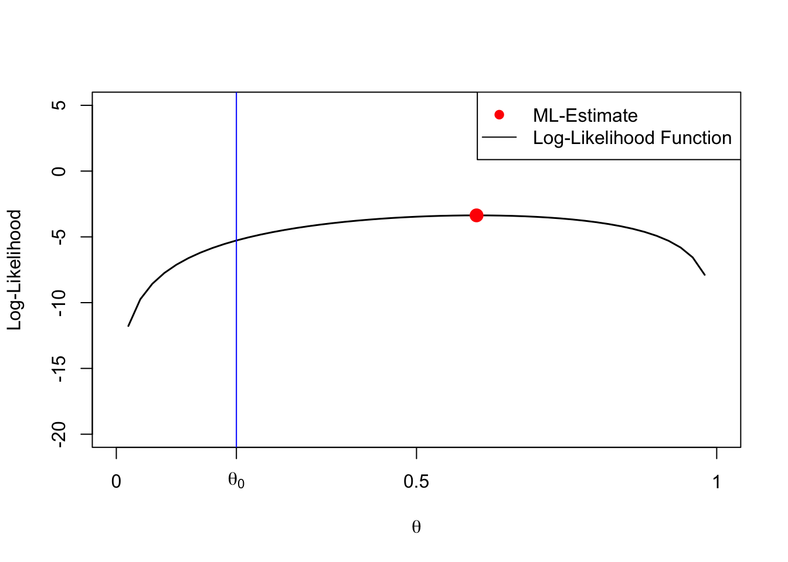
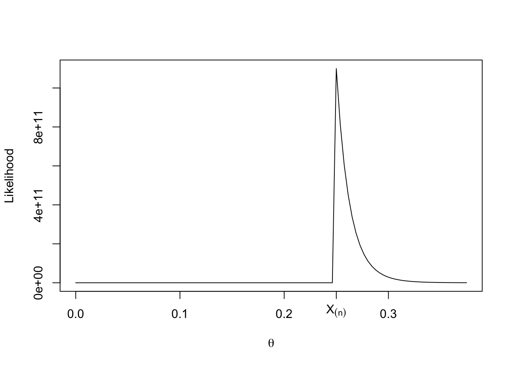
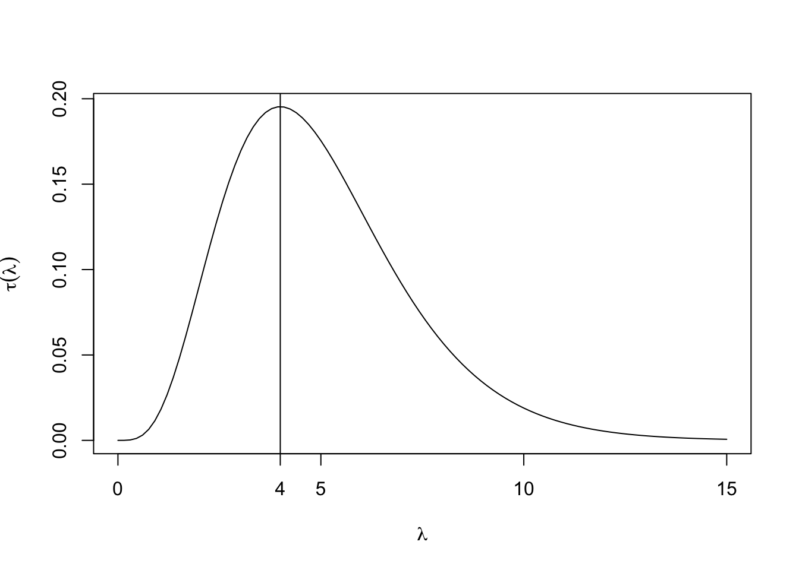
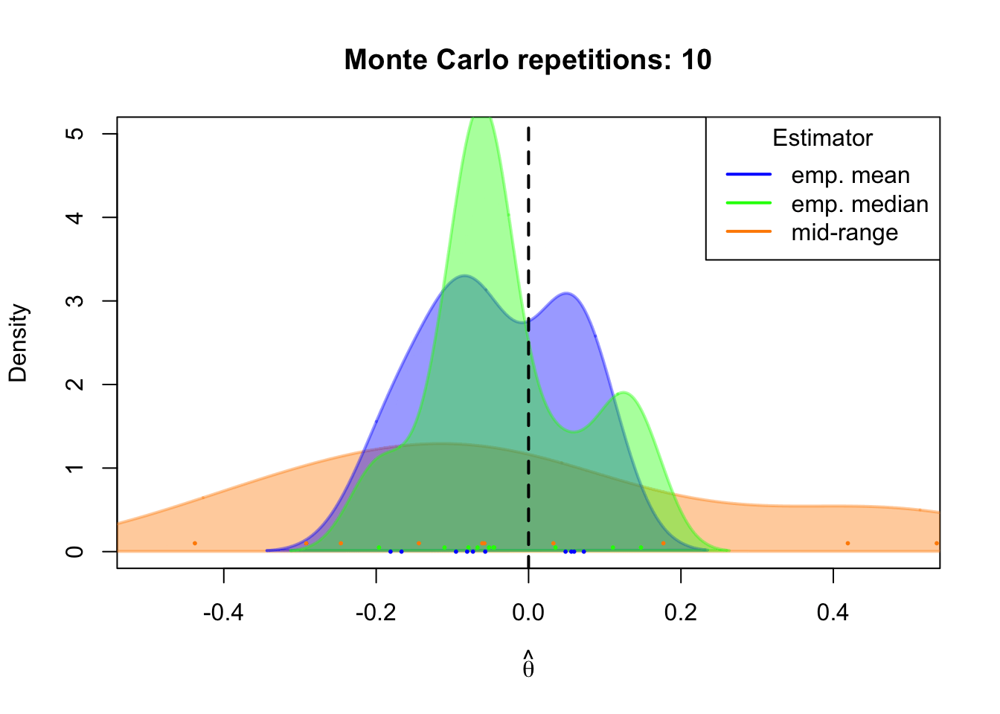
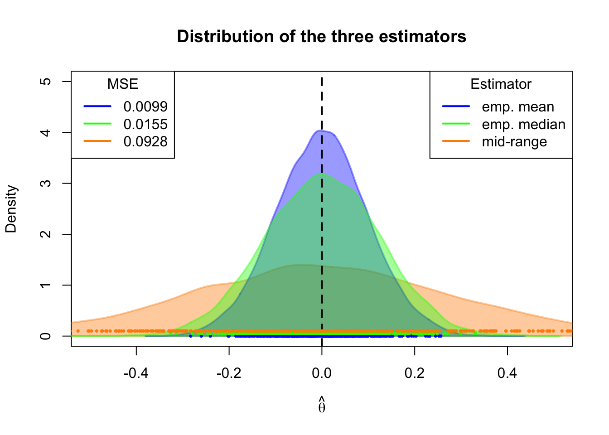

1 Maximum Likelihood
Recommended Reference:
- All of Statistics: A Concise Course in Statistical Inference (by Larry A. Wasserman)
1.1 Introduction: The Likelihood Principle
The basic idea behind maximum likelihood estimation is very simple: Assume that the data is generated by some distribution with a certain (finite) set of unknown distribution parameters (e.g., the normal distribution with unknown mean and variance). Then find the distribution parameters for which it is most likely that the distribution has generated the data we actually observed.
In (classic) maximum likelihood estimation we must be rather specific about the process that generated the data. This is a trade-off: by imposing a fair amount of structure on the data, we get in return a very desirable estimator. The question remains, however, whether we have made the right decision about the general distribution/density function family.
1.1.1 Properties of Maximum Likelihood Estimators
Why do we like maximum likelihood as an estimation method? The answer is that: A maximum likelihood estimator \(\hat\theta_n\) of some parameter, e.g. \(\theta_0\in\mathbb{R}\), is
- Consistent:
\[ \hat\theta_n\rightarrow_p\theta_0,\quad n\to\infty \] - Asymptotically normal: \[ \sqrt{n}(\hat\theta_n-\theta_0) \stackrel{a}{\sim} \mathcal{N}(0, \sigma^2) \]
- Asymptotically efficient: This means that no other consistent estimator has a lower asymptotic mean squared error than the maximum likelihood estimator.
Likewise for multivariate parameter \(\theta_0\in\mathbb{R}^p.\)
Thus, maximum likelihood estimators can be very appealing, provided that the assumption on the general distribution family is correct.
ML-estimation requires fixing the family of distributions \(f(\cdot;\theta)\)
Let \[ X_1,\dots,X_n \] denote a (i.i.d.) random sample, such that \(X_i\overset{\text{i.i.d.}}{\sim} f\), for all \(i=1,\dots,n.\)
Classic ML-estimation requires us to fix the general family of density functions or probability mass functions \(f,\) where \(f\) is known up to an unknown parameter value \(\theta_0,\) and where \(\theta_0\in\mathbb{R}^K\) is a finite (\(1\leq K<\infty\)) dimensional parameter vector.
Examples:
- \(f\) being the probability mass function of the Bernoulli distribution \(\mathcal{Bern}(\theta)\) with \[ f(x;\theta_0)= \left\{ \begin{array}{ll} \theta_0, & \text{if } x=1\\ 1-\theta_0, & \text{if } x=0 \end{array} \right. \] and unknown parameter \(0\leq \theta\leq 1.\)
- The density function of the exponential distribution \[ f(x;\theta_0)=\left\{ \begin{matrix} \theta_0\exp(- \theta_0 x)& \text{for }x\geq 0\\ 0 & \text{for }x < 0\\ \end{matrix}\right. \] with unknown rate parameter \(\theta_0>0\) and \(x\in\mathbb{R}.\)
- \(f\) is the normal density \[ f(x;\theta_0)=\frac{1}{\sigma\sqrt{2\pi}}\exp\left(-\frac{1}{2}\left(\frac{x-\mu_0}{\sigma_0}\right)^2\right) \] with unknown parameter vector \(\theta_0=(\mu_0,\sigma_0^2)^T\) and \(x\in\mathbb{R}.\)
This requirement (fixing the family of density functions) can be overly restrictive. In many applications we typically do not know the family of \(f.\) To address this issue, the quasi maximum likelihood theory generalizes classic maximum likelihood estimation to cases where \(f\) is misspecified (see White (1982)).
1.1.2 Example: Coin Flipping (Bernoulli Trial)
To introduce the main idea of maximum likelihood estimation, we use the simple example of a coin flipping experiment, where a possibly unfair \(\text{Coin}\) can take the value \(H\) (Head) or \(T\) (Tail), \[ \text{Coin}\in\{H,T\}. \] Such coin-flips can be modeled using Bernoulli random variables \[ X\sim\mathcal{Bern}(\theta_0) \] where \[ X=\left\{ \begin{matrix} 1 & \text{if } \text{Coin}=H\\[2ex] 0 & \text{if } \text{Coin}=T \end{matrix} \right. \] The probability mass function of the Bernoulli distribution \(\mathcal{Bern}(\theta_0),\) with unknown probability of success parameter \(0<\theta_0<1,\) is given by \[ f(x;\theta_0)= \left\{ \begin{array}{ll} \theta_0,&\text{if } x=1\\ 1-\theta_0, & \text{if } x=0 \end{array} \right. \] I.e., the probability that we get Head \(H\) is \[ \theta_0 = f(1;\theta_0) = P(X=1) = P(\text{Coin}=H), \] and the probability that we get Tail \(T\) is \[ 1-\theta_0 = f(0;\theta_0) = P(X=0) = P(\text{Coin}=T). \]
Our goal is to estimate the unknown \(\theta_0\) using a random (i.i.d.) sample of size \(n\) \[ \{X_1,\dots,X_n\} \] with \[ X_i=\left\{ \begin{matrix} 1 & \text{if } \text{Coin}=H\text{ in $i$th coin flip}\\[2ex] 0 & \text{if } \text{Coin}=T\text{ in $i$th coin flip} \end{matrix} \right. \] such that \[ X_i\overset{\text{i.i.d.}}{\sim}\mathcal{Bern}(\theta_0),\quad i=1,\dots,n. \]
A given observed realization of the random sample \[ \{X_{1,obs},X_{2,obs},\dots,X_{n,obs}\}=\{0,1,\dots,0\} \] consists of \(0\leq N_{H,obs}\leq n\) \[ N_{H,obs}=\sum_{i=1}^n X_{i,obs} \] many heads and \[ 0\leq n-N_{H,obs} \leq n \] many tails.
The (Log-)Likelihood Function
How do we combine the information from the \(n\) observations \[ \{X_{1,obs},\dots,X_{n,obs}\} \] to estimate the unknown \(\theta_0\)?
If the observations are realizations of an i.i.d. sample, then the joint probability of observing \(h\) heads \(H\) and \(n-h\) tails \(T\) in \(n\) coin flips is: \[ \begin{align*} \mathcal{L}_{n,obs}(\theta) &=\prod_{i=1}^nf(X_{i,obs};\theta)\\[2ex] %&=\left(P(X=1)\right)^{N_{H,obs}}\left(P(X=0)\right)^{n-N_{H,obs}}\\[2ex] %&= \theta^{N_{H,obs}}(1-\theta)^{n-N_{H,obs}} \\[2ex] &= \prod_{i=1}^n \theta^{X_{i,obs}}(1-\theta)^{1-X_{i,obs}}, \end{align*} \] where \(f(\,\cdot\,;\theta)\) denotes here the probability mass function of the Bernoulli distribution with parameter candidate \(p=\theta.\)
The function \(\mathcal{L}_n(\theta)\) is called the likelihood function. The likelihood function depends on the random sample \(\{X_{1},\dots,X_{n}\}\) and is thus itself random. If we want to emphasize that we look at a given realization of the random sample \(\{X_{1,obs},\dots,X_{n,obs}\}\), we write \(\mathcal{L}_{,obs}(\theta)\).
1.1.3 Estimation Idea
We estimate the unknown parameter \(\theta_0\) by maximizing the likelihood of the observed data \(\{X_{1,obs},\dots,X_{n,obs}\}\) over the range of possible parameter values \(\theta\in\Omega.\)
- The value \(\hat\theta_{ML}\) at which the likelihood function \(\mathcal{L}_n(\cdot)\) is maximized is called the maximum likelihood (ML) estimator
- The value \(\hat\theta_{ML,obs}\) at which the observed likelihood function \(\mathcal{L}_{n,obs}(\cdot)\) is maximized is called the maximum likelihood (ML) estimate; i.e., \(\hat\theta_{ML,obs}\) is a specific realization of the ML-estimator computed from the observed data \(\{X_{1,obs},\dots,X_{n,obs}\}.\)
Danger
For the rest of this chapter, I follow the usual convention and generally write \[ \{X_{1},\dots,X_{n}\}\quad\text{and}\quad \mathcal{L}_{n}(\theta)=\prod_{i=1}^n f(X_{i};\theta) \] to convey both the random variables point of view and the realization point of view (\(obs\)), since often both points of view can make sense in the same object. Only if I want to stress that the realization point of view applies, I write “\(obs.\)”
Take, for instance, the ML-estimator \[ \hat\theta_{ML}. \] Of course, we can only compute a specific value \((\hat\theta_{ML,obs})\) given an observed realization of the random sample. Using the random variable type of notation \(\hat\theta_{ML}\) to denote both the random variables point of view and the realization point of view reminds ourselves that any specific value \((\hat\theta_{ML,obs})\) is just a possible realization of the estimator.
Thus, to derive the estimator for the unknown \(\theta_0\) in our coin flip example, we need to maximize the likelihood function, \[ \begin{align*} \hat{\theta}_{ML} &=\arg\max_{\theta\in[0,1]} \mathcal{L}_n(\theta)\\[2ex] &=\arg\max_{\theta\in[0,1]} \prod_{i=1}^n f(X_{i};\theta)\\[2ex] &=\arg\max_{\theta\in[0,1]} \prod_{i=1}^n \theta^{X_{i}}(1-\theta)^{1-X_{i}}. \end{align*} \]
Usually it’s easier to work with sums rather than products—also for doing the asymptotics in Section 1.4. So we apply a monotonic transformation by taking the logarithm of the likelihood which leads to the log-likelihood function: \[ \begin{align*} \ell_n(\theta) &=\ln\mathcal{L}_n(\theta)\\[2ex] &=\ln\prod_{i=1}^n f(X_{i};\theta)\\[2ex] &=\sum_{i=1}^n \ln f(X_{i};\theta). \end{align*} \] Since this is only a monotonic transformation, we have that \[ \begin{align*} \hat\theta_{ML} &=\arg\max_{\theta\in\Theta} \mathcal{L}_n(\theta)\\[2ex] &=\arg\max_{\theta\in\Theta} \ell_n(\theta). \end{align*} \]
Note
From a standpoint of computational complexity, you can imagine that summing is less expensive than multiplication (although nowadays, these are almost equal).
More important: likelihoods would become very small and you will run out of your floating point precision very quickly, yielding an underflow. That’s why it is way more convenient to use the logarithm of the likelihood. Simply try to calculate the likelihood by hand, using pocket calculator—it’s almost impossible.
In our coin flipping example, taking the natural logarithm yields, \[ \begin{align*} \mathcal{L}_n(\theta) &= \prod_{i=1}^n \theta^{X_{i}}(1-\theta)^{1-X_{i}} \\[2ex] \Rightarrow\quad \ell_n(\theta) &=\ln\mathcal{L}_n(\theta)\\[2ex] &=\sum_{i=1}^n\left( X_{i} \ln(\theta) + (1-X_{i})\ln(1-\theta)\right). \end{align*} \]
Figure 1.1 shows some random realizations of the log-likelihood function based on different random realizations of the \(n=5\) coin tosses, i.e. realizations of the random sample \(\{X_1,\dots,X_n\}\in\{0,1\}^n.\)
with this block:
The coin flip example is actually so simple that we can maximize \(\ell_n(\theta)\) analytically. Computing the first derivative yields \[ \begin{align*} \ell'_n(\theta)&=\sum_{i=1}^n \left(X_{i}\dfrac{1}{\theta} - (1-X_{i})\dfrac{1}{1-\theta}\right)\\[2ex] &=\dfrac{N_{H}}{\theta} - \dfrac{n-N_{H}}{1-\theta} \end{align*} \] Setting the first derivative to zero determines the maximum likelihood estimator (MLE) \(\hat\theta_{ML}\): \[ \begin{array}{rrcl} &\ell_n'(\hat\theta_{ML})&\overset{!}{=}&0\\[2ex] \Leftrightarrow&\dfrac{N_{H}}{\hat\theta_{ML}} &=& \dfrac{n-N_{H}}{1-\hat\theta_{ML}} \\[2ex] \Leftrightarrow&N_{H}-N_{H}\hat\theta_{ML} &=& n\hat\theta_{ML}-N_{H}\hat\theta_{ML}\\[2ex] \Leftrightarrow&\hat\theta_{ML} &=&\dfrac{N_{H}}{n}\\[2ex] &&=&\dfrac{1}{n}\sum_{i=1}^n X_i \end{array} \tag{1.1}\]
Given observed data \(\{X_{1,obs},\dots,X_{n,obs}\},\) a specific estimate of \(\theta_0\) can thus be computed as \[ \begin{align*} \hat{\theta}_{ML,obs}=\dfrac{1}{n}\sum_{i=1}^n X_{i,obs}. \end{align*} \]
Usually, however, the log-likelihood function is way more complicated such that it is impossible to derive an explicit expression for the ML-estimator \(\hat\theta_{ML}.\) In such cases, one needs to apply numeric optimization algorithms to compute the ML-estimates, \(\hat\theta_{ML,obs}.\)
1.2 Numeric Optimization
Note
Usually, we are not so fortunate as to have an analytical solution for the MLE, and must rely on the computer to find the maximizing arguments of the log-likelihood function. Various methods exist for finding the maximum (or minimum) of a function (e.g. the Newton-Raphson algorithm). In this aspect, MLE belongs to the field of computational statistics.
1.3 A classical Example: Linear Regression under Normality
Now, let’s return to the linear regression model \[
Y_i=X_i^T\beta_0 + \varepsilon_i,\quad i=1,\dots,n,
\tag{1.2}\] where \(Y_i\in\mathbb{R}\) denotes the response (or “dependent”) variable, \[
\beta_0\in\mathbb{R}^K
\] denotes the vector of unknown slope parameters, and \[
X_i:=(\underbrace{X_{i1}}_{=1},X_{i2},\ldots,X_{iK})^T\in\mathbb{R}^K
\] denotes the vector of predictor variables, where the (i.i.d.) random sample
\[
(Y_1,X_1), (Y_2,X_2), \dots, (Y_n,X_n)
\] follows a random design with homoskedastic errors (see Definition 1.3).
For the following, it is convenient to write Equation 1.2 using matrix notation \[ \begin{eqnarray*} \underset{(n\times 1)}{Y}&=&\underset{(n\times K)}{X}\underset{(K\times 1)}{\beta_0} + \underset{(n\times 1)}{\varepsilon}, \end{eqnarray*} \] where \[ \begin{equation*} Y=\left(\begin{matrix}Y_1\\ \vdots\\Y_n\end{matrix}\right),\quad X=\left(\begin{matrix}X_{11}&\dots&X_{1K}\\\vdots&\ddots&\vdots\\ X_{n1}&\dots&X_{nK}\\\end{matrix}\right),\quad\text{and}\quad \varepsilon=\left(\begin{matrix}\varepsilon_1\\ \vdots\\ \varepsilon_n\end{matrix}\right). \end{equation*} \]
Under normally distributed and homoskedastic error terms, \(\varepsilon_i,\) we have that \[ \begin{align} \underset{(n\times 1)}{\varepsilon|X} &\sim \mathcal{N}_n\left(0, \sigma_0^2I_n\right)\\[2ex] \Rightarrow\quad (Y-X\beta_0)|X &\sim \mathcal{N}_n\left(0, \sigma^2_0I_n\right). \end{align} \] That is, for each \(i=1,\dots,n,\) we have that \[ \begin{align} (Y_i-X_i^T\beta_0)|X_i &\sim \mathcal{N}\left(0, \sigma^2_0\right)\\[2ex] \Rightarrow\quad Y_i|X_i &\sim \mathcal{N}\left(X_i^T\beta_0, \sigma^2_0\right) \end{align} \tag{1.3}\]
Under Equation 1.3, we have \[ f(Y_i|X_i;\beta_0^T,\sigma_0^2)= \frac{1}{(2\pi\sigma^2)^{1/2}}\exp\left(-\frac{(Y_i-X_i^T\beta_0)^2}{2\sigma_0^2}\right), \] where \[ \theta_0=(\beta_0^T,\sigma_0^2)^T\in\mathbb{R}^K\times\mathbb{R}_{>0} \] denotes the \(((K+1)\times 1)\) dimensional unknown parameter vector.
This allows us to setup the likelihood function, \[ \begin{align*} \mathcal{L}_n(\beta^T,\sigma^2) & =\prod_{i=1}^n f(Y_i|X_i;\beta^T,\sigma^2)\\[2ex] & =\prod_{i=1}^n \frac{1}{(2\pi\sigma^2)^{1/2}}\exp\left(-\frac{(Y_i-X_i^T\beta)^2}{2\sigma^2}\right)\\[2ex] & =\left(\frac{1}{(2\pi\sigma^2)^{1/2}}\right)^{n}\exp\left(-\frac{\sum_{i=1}^n (Y_i-X_i^T\beta)^2}{2\sigma^2}\right)\\[2ex] %& =\dfrac{1}{(2\pi \sigma^2)^{n/2}} \exp\left(-\frac{\varepsilon'\varepsilon}{2\sigma^2}\right)\\[2ex] & =(2\pi)^{-n/2} \cdot (\sigma^2)^{-n/2}\cdot \exp\left(-\frac{(Y-X\beta)^T(Y-X\beta)}{2\sigma^2}\right),\\[2ex] \end{align*} \] and the log-likelihood function, \[ \begin{align*} \ell_n(\beta^T,\sigma^2)& =-\dfrac{n}{2} \ln(2\pi) - \dfrac{n}{2}\ln(\sigma^2) - \dfrac{1}{2 \sigma^2}(Y-X\beta)^T(Y-X\beta). \end{align*} \]
Taking first derivatives gives \[ \begin{align*} \underset{(K\times 1)}{\dfrac{\partial \ell_n}{\partial \beta}(\beta^T,\sigma^2)} &= - \dfrac{1}{\sigma^2}(-X^TY + X^TX\beta)\\[2ex] \underset{(1\times 1)}{\dfrac{\partial \ell_n}{\partial \sigma^2}(\beta^T,\sigma^2)} %&= -\dfrac{n}{2\sigma^2}+ \dfrac{1}{2\sigma^4}(Y-X\beta)^T(Y-X\beta) &=-\frac{n}{2 \sigma^{2}}+\left[\frac{1}{2}(Y-X\beta)^T(Y-X\beta)\right]\frac{1}{\left(\sigma^{2}\right)^{2}}\\ %&=\frac{1}{2 \sigma^{2}}\left[\frac{1}{\sigma^{2}} (Y-X\beta)^T(Y-X\beta)-n\right] \end{align*} \] Putting the above derivative functions into one column vector yields the \(((K+1)\times 1)\)-dimensional gradient called score function in ML-theory: \[ \nabla\ell_n(\theta^T)= \left(\begin{matrix} \dfrac{\partial \ell_n}{\partial \beta}(\beta^T,\sigma^2)\\ \dfrac{\partial \ell_n}{\partial \sigma^2}(\beta^T,\sigma^2) \end{matrix}\right) \tag{1.4}\]
Note
The score function is random, since it depends on the random sample. For a given set of observed data, we compute one realization of the score function.
At the true parameter vector \(\theta_0\in\mathbb{R}^p,\) the score function satisfies \[ \mathbb{E}\left(\dfrac{\partial \ell_n}{\partial \theta_j}(\theta_0^T)\right)=0 \] for all \(j=1,\dots,p;\) i.e. \[ \mathbb{E}\left(\nabla\ell_n(\theta^T_0)\right)=\left(\begin{matrix} \mathbb{E}\left(\dfrac{\partial \ell_n}{\partial \theta_1}(\theta^T_0)\right)\\ \vdots\\ \mathbb{E}\left(\dfrac{\partial \ell_n}{\partial \theta_p}(\theta^T_0)\right) \end{matrix} \right) = \underset{(p\times 1)}{0} \] We prove this below in Section 1.4.
Setting the score function in Equation 1.4 equal to zero yields a system of \(K+1\) equations with \(K+1\) unknowns, which identifies the ML-estimators \((\hat\beta_{ML}\) and \(s_{ML}^2),\) \[ \begin{align*} &\nabla\ell_n(\hat\theta^T_{ML}) = \left(\begin{matrix} \dfrac{\partial \ell_n}{\partial \beta}(\hat\beta^T_{ML},s_{ML}^2)\\ \dfrac{\partial \ell_n}{\partial \sigma^2}(\hat\beta^T_{ML},s_{ML}^2), \end{matrix}\right)\overset{!}{=}0\\[2ex] \Leftrightarrow & \left(\begin{matrix} - \dfrac{1}{s_{ML}^2}(-X^TY + X^TX\hat\beta_{ML})\\ -\frac{n}{2 s_{ML}^2}+\left[\frac{1}{2}(Y-X\hat\beta_{ML})^T(Y-X\hat\beta_{ML})\right]\frac{1}{\left(s_{ML}^2\right)^{2}} \end{matrix}\right) \overset{!}{=} \underset{((K+1)\times 1)}{0} \end{align*} \] and which we can solve for the maximum likelihood estimators \(\hat\beta_{ML}\) and \(s^2_{ML}.\)
Solving for \(\hat\beta_{ML}:\) \[ \begin{align*} %& \dfrac{\partial \ell_n}{\partial \beta}(\hat\beta_{ML}',s^2_{ML}) \overset{!}{=}0\\[2ex]\Leftrightarrow\quad & - \dfrac{1}{s_{ML}^2}(-X^TY + X^TX\hat\beta_{ML}) \overset{!}{=}0\\[2ex] \Rightarrow\quad & \hat\beta_{ML}=(X^TX)^{-1}X^TY\\[2ex] \end{align*} \] Solving for \(s^2_{ML}:\) \[ \begin{align*} %& \dfrac{\partial \ell_n}{\partial \sigma^2}(\hat\beta_{ML}',s^2_{ML}) \overset{!}{=}0\\[2ex]\Leftrightarrow\quad &-\frac{n}{2 s_{ML}^2}+\left[\frac{1}{2}(Y-X\hat\beta_{ML})^T(Y-X\hat\beta_{ML})\right]\frac{1}{\left(s_{ML}^2\right)^{2}} \overset{!}{=}0\ \\[2ex] \Rightarrow\quad & s_{ML}^2 =\dfrac{1}{n}(Y-X\hat\beta_{ML})^T(Y-X\hat\beta_{ML})\\[2ex] &\phantom{s_{ML}^2}=\dfrac{1}{n}\sum_i^n \hat\varepsilon_i^2, \end{align*} \] where \(\hat\varepsilon_i = Y_i - X_i^T\hat{\beta}_{ML}.\)
Observations:
\(\hat\beta_{ML}\) equals the OLS estimator \(\hat\beta=(X^TX)^{-1}X^TY.\)
Since the ML estimator \(\hat\beta_{ML}\) is here equivalent to the OLS estimator we can use the classic inference machinery (\(t\)-test, \(F\)-test, confidence intervals) developed for the classic OLS estimator (see your econometrics class).\(s_{ML}^2\) differs from the unbiased variance estimator \(s_{UB}^2=\frac{1}{n-K}\hat{\varepsilon}_i^2.\)
1.3.1 Variance of ML-Estimators \(\hat\beta_{ML}\) and \(s^2_{ML}\)
Computing the Asymptotic Variance
To compute the asymptotic variance of the ML-estimators \(\hat\beta_{ML}\) and \(s^2_{ML},\) we need to
- compute the Hessian matrix (i.e. all second partial derivatives) of \(\ell_n\) and evaluate it at the true parameter values \(\beta_0\) and \(\sigma_0,\)
- take the expectation of this Hessian matrix and multiply it by \(-1/n\), which gives us the Fisher Information matrix.
- Inverting the Fisher information matrix gives the asymptotic variance expression.
Partial second derivatives with respect to \(\beta:\) \[ \begin{align*} \underset{(K\times 1)}{\dfrac{\partial \ell_n}{\partial \beta}(\beta^T_0,\sigma^2_0)} &= - \dfrac{1}{\sigma^2_0}(-X^TY + X^TX\beta_0)\\[2ex] \Rightarrow\quad \underset{(K\times K)}{\dfrac{\partial^2 \ell_n}{\partial \beta\partial \beta^T}(\beta^T_0,\sigma^2_0)} &= - \dfrac{1}{\sigma^2_0}(X^TX) \end{align*} \] \[ \begin{align*} \Rightarrow\quad &-\frac{1}{n}\cdot \mathbb{E}\left(\dfrac{\partial^2 \ell_n}{\partial \beta\partial \beta^T}(\beta^T_0,\sigma^2_0)\right)\\[2ex] &= -\frac{1}{n}\cdot \left(-\dfrac{1}{\sigma^2_0} \mathbb{E}(X^TX)\right)\\[2ex] &= -\frac{1}{n}\cdot \left(-\dfrac{n}{\sigma^2_0} \Sigma_{X^TX}\right)\\[2ex] &= \dfrac{1}{\sigma^2_0} \Sigma_{X^TX}, \end{align*} \] where
\[ \mathbb{E}\left(X^TX\right) =\mathbb{E}\left(\sum_{i=1}^nX_iX_i^T\right) =n\underbrace{\mathbb{E}\left(X_iX_i^T\right)}_{=:\Sigma_{X^TX}} = n\Sigma_{X^TX}. \]Second derivative with respect to \(\sigma^2:\) \[ \begin{align*} \underset{(1\times 1)}{\dfrac{\partial \ell_n}{\partial \sigma^2}(\beta^T_0,\sigma^2_0)} &=-\frac{n}{2 \sigma_0^{2}}+\frac{1}{2}\frac{(Y-X\beta_0)^T(Y-X\beta_0)}{\left(\sigma^2_0\right)^{2}}\\[2ex] \Rightarrow\quad\underset{(1\times 1)}{\dfrac{\partial^2 \ell_n}{\partial \sigma^2\partial \sigma^2}(\beta^T_0,\sigma^2_0)} &=\frac{n}{2 \left(\sigma^2_0\right)^2}-\dfrac{(Y-X\beta_0)^T(Y-X\beta_0)}{\left(\sigma^2_0\right)^{3}} \\[2ex] &=\frac{n}{2\sigma_0^{4}}-\frac{\sum_{i=1}^n\varepsilon_i^2}{\sigma^6_0} \\[2ex] \end{align*} \] \[ \begin{align*} \Rightarrow\quad &-\frac{1}{n}\cdot \mathbb{E}\left(\dfrac{\partial^2 \ell_n}{\partial \sigma^2\partial \sigma^2}(\beta^T_0,\sigma^2_0)\right)\\[2ex] &=-\frac{1}{n}\cdot \left(\frac{n}{2\sigma_0^4}-\frac{\mathbb{E}\left(\sum_{i=1}^n\varepsilon_i^2\right)}{\sigma_0^6} \right)\\[2ex] &=-\frac{1}{n}\cdot \left(\frac{n}{2\sigma_0^4}-\frac{n\sigma_0^2}{\sigma^6_0}\right)\\[2ex] &=\left(-\frac{1}{2\sigma^4_0}+\frac{1}{\sigma^4_0}\right)\\[2ex] &=\frac{1}{2\sigma^4_0}\\[2ex] \end{align*} \]
First derivative with respect to \(\beta,\) second derivative with respect to \(\sigma^2:\) \[ \begin{align*} \underset{(K\times 1)}{\dfrac{\partial \ell_n}{\partial \beta}(\beta^T_0,\sigma^2_0)} &= - \dfrac{1}{\sigma^2_0}(-X^TY + X^TX\beta_0)\\[2ex] &= \dfrac{1}{\sigma^2_0}X^T(Y - X\beta_0)\\[2ex] &= \dfrac{1}{\sigma^2_0}X^T\varepsilon\\[2ex] \end{align*} \]
\[ \begin{align*} \Rightarrow\quad \underset{(K\times 1)}{\dfrac{\partial^2 \ell_n}{\partial \beta \partial \sigma^2}(\beta^T_0,\sigma^2_0)} = \left(\dfrac{\partial^2 \ell_n}{\partial \sigma^2 \partial \beta^T}(\beta^T_0,\sigma^2_0)\right)^T & = -\frac{X^T\varepsilon}{\sigma_0^4}\\ \end{align*} \] \[ \begin{align*} \Rightarrow\quad &\;\;\;\;-\frac{1}{n}\cdot \mathbb{E}\left(\dfrac{\partial^2 \ell_n}{\partial \beta\partial \sigma^2}(\beta^T_0,\sigma^2_0)\right)\\[2ex] &=-\frac{1}{n}\cdot\left(\mathbb{E}\left(\dfrac{\partial^2 \ell_n}{\partial \sigma^2 \partial \beta}(\beta^T_0,\sigma^2_0)\right)\right)^T\\[2ex] &=\frac{1}{n}\cdot\frac{\mathbb{E}(X^T\varepsilon)}{\sigma^4_0}\\[2ex] &=\frac{1}{n}\cdot\frac{\mathbb{E}(\mathbb{E}(X^T\varepsilon|X))}{\sigma^4_0}\\[2ex] &=\frac{1}{n}\cdot\frac{\mathbb{E}(X^T\mathbb{E}(\varepsilon|X))}{\sigma^4_0}\\[2ex] &=\frac{1}{n}\cdot 0=0, \end{align*} \] since \(\mathbb{E}(\varepsilon|X)=0\) is an \((n\times 1)\) zero vector.
Collecting the above results, allows us to write down the expression for \((-1/n)\) times the expectation of the Hessian matrix of \(\ell_n,\) evaluated at the true parameter values \(\theta_0=(\beta_0^T,\sigma_0)^T,\) which yields the Fisher Information (Matrix):
\[ \begin{align*} \mathcal{I}(\theta_0) &:=\; -\frac{1}{n}\cdot\mathbb{E}\left(H_{\ell_n}(\beta^T_0,\sigma^2_0)\right)\\[2ex] &= -\frac{1}{n}\cdot \mathbb{E} \left[\begin{array}{cc} \left(\dfrac{\partial^2 \ell_n}{\partial \beta\partial \beta^T}(\beta^T_0,\sigma^2_0)\right) & \left(\dfrac{\partial^2 \ell_n}{\partial \beta\partial \sigma^2 }(\beta^T_0,\sigma^2_0)\right)\\ \left(\dfrac{\partial^2 \ell_n}{\partial \sigma^2 \partial \beta^T}(\beta^T_0,\sigma^2_0)\right) & \left(\dfrac{\partial^2 \ell_n}{\partial \sigma^2\partial \sigma^2}(\beta^T_0,\sigma^2_0) \right) \end{array}\right]\\[2ex] &=\left[\begin{array}{cc} \underset{(K\times K)}{\frac{1}{\sigma^2_0}\Sigma_{X^TX}} & \underset{(K\times 1)}{0}\\ \underset{(1\times K)}{0} & \underset{(1\times 1)}{\frac{1}{2\sigma^4_0}} \end{array}\right] \end{align*} \]
Asymptotic Variance and Fisher Information Matrix
The asymptotic variance of the MLE \[ \hat{\theta}_{ML}=\left(\begin{array}{c}\hat\beta_{ML,n} \\ s_{ML,n}^2\end{array}\right) \] is given by the inverse of the Fisher information matrix evaluated at the true parameter values \(\beta_0\) and \(\sigma^2_0.\) \[ \begin{align*} &AVar\left(\begin{array}{c}\hat\beta_{ML,n} \\ s_{ML,n}^2\end{array}\right) =\lim_{n\to\infty} n\cdot Var\left(\begin{array}{c}\hat\beta_{ML,n} \\ s_{ML,n}^2\end{array}\right)\\[2ex] &=\left(\mathcal{I}(\beta^T_0,\sigma^2_0)\right)^{-1}\\[2ex] &=\left(-\frac{1}{n}\cdot\mathbb{E}\left(H_{\ell_n}(\beta^T_0,\sigma^2_0)\right)\right)^{-1}\\[2ex] &= \left[\begin{array}{cc} -\frac{1}{n}\cdot \mathbb{E}\left(\dfrac{\partial^2 \ell_n}{\partial \beta\partial \beta^T}(\beta^T_0,\sigma^2_0)\right) & -\frac{1}{n}\cdot \mathbb{E}\left(\dfrac{\partial^2 \ell_n}{\partial \beta\partial \sigma^2}(\beta^T_0,\sigma^2_0)\right)\\ -\frac{1}{n}\cdot \mathbb{E}\left(\dfrac{\partial^2 \ell_n}{\partial \sigma^2 \partial \beta^T}(\beta^T_0,\sigma^2_0)\right) & -\frac{1}{n}\cdot \mathbb{E}\left(\dfrac{\partial^2 \ell_n}{\partial \sigma^2\partial \sigma^2}(\beta^T_0,\sigma^2_0) \right) \end{array}\right]^{-1}\\[2ex] &=\left[\begin{array}{cc} \underset{(K\times K)}{\frac{1}{\sigma^2_0}\Sigma_{X^TX}} & \underset{(K\times 1)}{0}\\ \underset{(1\times K)}{0} & \underset{(1\times 1)}{\frac{1}{2\sigma^4_0}} \end{array}\right]^{-1}\\[2ex] &=\left[\begin{array}{cc} \underset{(K\times K)}{\sigma^2_0\Sigma_{X^TX}^{-1}} & \underset{(K\times 1)}{0}\\ \underset{(1\times K)}{0} & \underset{(1\times 1)}{2\sigma^4_0} \end{array}\right] \end{align*} \]
That is, \[ \begin{align*} AVar\left(\begin{array}{c}\hat\beta_{ML,n} \\ s_{ML,n}^2\end{array}\right) &=\lim_{n\to\infty} n\cdot Var\left(\begin{array}{c}\hat\beta_{ML,n} \\ s_{ML,n}^2\end{array}\right)\\[2ex] &= \left[\begin{array}{cc} \sigma^2_0\Sigma_{X^TX}^{-1} & 0 \\[2ex] 0 & \ 2\sigma^4_0 \end{array}\right]. \end{align*} \tag{1.5}\]
Equation 1.5 means that \[ \begin{align*} \underset{(K\times K)}{Var\left(\begin{array}{c}\hat\beta_{ML,n} \\ s_{ML,n}^2\end{array}\right)} &\approx \left[\begin{array}{cc} \underset{(K\times K)}{\frac{1}{n}\,\sigma^2_0\Sigma_{X^TX}^{-1}} & \underset{(K\times 1)}{0}\\ \underset{(1\times K)}{0} & \underset{(1\times 1)}{\frac{1}{n}\,2\sigma^4_0} \end{array}\right], \end{align*} \tag{1.6}\] where the approximation is good for largish sample sizes \(n.\)
Of course, the variance expressions in Equation 1.5 and Equation 1.6, respectively, contain unknown quantities and are, therefore, not directly usable in practice. However, we can plug in estimates for the unknown quantities; namely \[ s_{ML}^2 \quad\text{for}\quad \sigma^2_0 \] and \[ S_{X^TX}^{-1}=\left(\frac{1}{n}\sum_{i=1}^nX_i X_i^T\right)^{-1} \quad \text{for}\quad \Sigma_{X^TX}^{-1}. \]
This leads to estimators for the variances of \(\hat{\beta}_{ML}\) and \(s_{ML}^2:\) \[ \begin{align} \widehat{Var}(\hat{\beta}_{ML}) =\frac{1}{n}\widehat{AVar}(\hat{\beta}_{ML}) &=\frac{1}{n} \,s_{ML}^2 S_{X^TX}^{-1}\\[2ex] &=s_{ML}^2 \left(\sum_{i=1}^nX_i X_i^T\right)^{-1}\\[2ex] \widehat{Var}(s^2_{ML}) =\frac{1}{n}\widehat{AVar}(s^2_{ML}) &=\frac{1}{n}2\left(s_{ML}^2\right)^2. \end{align} \]
1.3.2 Asymptotic Distribution and Single Parameter Testing
It follows from asymptotic maximum likelihood theory (see Section 1.4) that the probability distribution of the vector of parameter estimates \[ \begin{pmatrix} \hat\beta_{ML,n}\\ \hat s_{ML,n}^2 \end{pmatrix} \] can be approximated (for largish \(n\)) by the following multivariate normal distribution \[ \begin{align*} \sqrt{n}\left( \hat\theta_{ML,n}-\theta_0 \right) &\to_d \mathcal{N}_{p}\left( 0, \left(\mathcal{I}(\theta_0)\right)^{-1} \right)\\[2ex] \sqrt{n}\left( \begin{pmatrix} \hat\beta_{ML,n}\\ \hat s_{ML,n}^2 \end{pmatrix}- \begin{pmatrix} \beta_0\\ \sigma_0^2 \end{pmatrix}\right) &\to_d \mathcal{N}_{K+1}\left(\begin{pmatrix} 0\\ 0 \end{pmatrix}, \begin{pmatrix} \sigma_0^2\Sigma_{X^TX}^{-1} & 0\\ 0 & 2\sigma_0^4 \end{pmatrix} \right)\\[2ex] \Leftrightarrow \begin{pmatrix} \hat\beta_{ML,n}\\ \hat s_{ML,n}^2 \end{pmatrix} &\overset{a}{\sim} \mathcal{N}_{K+1}\left( \begin{pmatrix} \beta_0\\ \sigma_0^2 \end{pmatrix}, \begin{pmatrix} \frac{1}{n}\sigma_0^2\Sigma_{X^TX}^{-1} & 0\\ 0 & \frac{1}{n}2\sigma_0^4 \end{pmatrix} \right) \end{align*} \]
Plugging-in estimators for the unknown variance components, i.e.
- \(\frac{1}{n}\,s_{ML}^2 S_{X^TX}^{-1}\quad\) for \(\quad\frac{1}{n}\,\sigma_0^2 \Sigma_{X^TX}^{-1}\)
and
- \(\frac{1}{n}2\left(s_{ML}^2\right)^2\quad\) for \(\quad\frac{1}{n}2\sigma_0^4\)
allows using this asymptotic normality result in testing.
Single Parameter Testing
For instance, we can do a single-parameter test for
\[ \begin{align*} H_0\colon \beta_{0,k} & = \beta_{0,k}^{(0)}\\ H_1\colon \beta_{0,k} &\neq \beta_{0,k}^{(0)},\\ \end{align*} \] where \(\beta_{0,k}^{(0)}\) denotes the null-hypothetical value (typically, \(\beta_{0,k}^{(0)}=0\)), using the Wald statistic \[ T_{\beta_{0,k},n}=\frac{\hat\beta_{ML,k} - \beta_{0,k}^{(0)}}{\sqrt{s_{ML}^2 \frac{1}{n}\left[S_{X^TX}^{-1}\right]_{(k,k)}}}\overset{H_0}{\to_d} \mathcal{N}(0,1)\quad \text{as}\quad n\to\infty. \] Testing: We reject \(H_0,\) if the observed value \(T_{\beta_{0,k},n,obs}\) is in absolute values larger than the \((1-\alpha/2)\)-qantile of the standard normal distribution, \[ |T_{\beta_{0,k},n,obs}| > z_{1-\alpha/2}, \] where \(\alpha\in(0,1)\) denotes the chosen significance level, such as \(\alpha=0.01.\)
Likewise, for \[ \begin{align*} H_0\colon \sigma_0^2 & = (\sigma_0^{(0)})^2\\ H_1\colon \sigma_0^2 &\neq (\sigma_0^{(0)})^2,\\ \end{align*} \] where \((\sigma_0^{(0)})^2\) denotes the null-hypothetical value, using the Wald statistic \[ T_{\sigma_0,n}=\frac{s_{ML}^2 - (\sigma_0^{(0)})^2}{\sqrt{\frac{1}{n}2\left(s_{ML}^2\right)^2}}\overset{H_0}{\to_d} \mathcal{N}(0,1)\quad \text{as}\quad n\to\infty. \]
Testing: We reject \(H_0,\) if the observed value \(T_{\sigma_{0},n,obs}\) is in absolute values larger than the \((1-\alpha/2)\)-qantile of the standard normal distribution, \[ |T_{\sigma_{0},n,obs}| > z_{1-\alpha/2}, \] where \(\alpha\in(0,1)\) denotes the chosen significance level, such as \(\alpha=0.01.\)
1.4 Asymptotic Theory of Maximum-Likelihood Estimators
In the following, we consider the asymptotic distribution of ML-estimators.
We only consider the simplest situation: Assume a random sample
\[
X_1,\dots,X_n\overset{\text{i.i.d.}}{\sim}X,
\] where \(X\in\mathbb{R}\) is a univariate random variable with density function \[f(x;\theta_0),
\] where the true (unknown, univariate) parameter \(\theta_0\in\Theta\) is an interior point of a compact parameter interval \[\Theta=[\theta_l,\theta_u]\subset\mathbb{R}.
\] Note: \(\theta_0\) is an “interior point” of \(\Theta\) if \(\theta_l<\theta_0<\theta_u.\)
Moreover, we consider the following setup.
- Likelihood function: \[ \mathcal{L}_n(\theta)=\prod_{i=1}^n f(X_i;\theta) \]
- Log-likelihood function: \[ \ell_n(\theta)=\ln\mathcal{L}(\theta)=\sum_{i=1}^n \ln f(X_i;\theta) \]
- Maximum-likelihood estimator \(\hat{\theta}_n\) \[ \hat{\theta}_n=\arg\max_{\theta\in\Theta}\ell_n(\theta) \]
- The maximum-likelihood estimator \(\hat{\theta}_n\) maximizes \(\ell_n(\theta)\) uniquely such that \[ \ell_n'(\hat\theta_n)=0\quad\text{and}\quad\ell_n''(\hat\theta_n)<0 \]
- It is assumed that the partial derivatives \[ \frac{\partial}{\partial\theta}f(x;\theta)\quad\text{and}\quad \frac{\partial^2}{\partial\theta^2}f(x;\theta) \] exist and that these partial derivatives can be passed under the integral such that \[ \begin{align*} \frac{\partial}{\partial\theta}\int f(x;\theta)dx &=\int\frac{\partial}{\partial\theta} f(x;\theta)dx\\ \frac{\partial^2}{\partial\theta^2}\int f(x;\theta)dx &=\int\frac{\partial^2}{\partial\theta^2} f(x;\theta)dx \end{align*} \] for all \(\theta\in\Theta.\)
The derivation of the asymptotic distribution of the ML estimator, \(\hat\theta_n,\) relies on an expansion of the derivative of the log-likelihood function, \[ \ell_n'(\cdot), \] around \(\theta_0\) (see Equation 1.7 below) using the Mean Value Theorem (Theorem 1.1).
By the Mean Value Theorem (Theorem 1.1), we know that \[ \ell_n'(\hat{\theta}_n)=\ell_n'(\theta_0)+\ell_n''(\psi_n)(\hat{\theta}_n-\theta_0) \tag{1.7}\] for some \(\psi_n\) between \(\hat{\theta}_n\) and \(\theta_0;\) i.e.
- \(\psi_n\in(\theta_0,\hat{\theta}_n)\quad\) if \(\quad\theta_0<\hat{\theta}_n\)
- \(\psi_n\in(\hat{\theta}_n,\theta_0)\quad\) if \(\quad\hat{\theta}_n<\theta_0\)
Since \(\hat{\theta}_n\) maximizes the log-Likelihood function it follows that \[ \ell_n'(\hat{\theta}_n)=0. \] Together with Equation 1.7, this implies that \[ \overbrace{\ell_n'(\hat{\theta}_n)}^{=0}=\ell_n'(\theta_0)+\ell_n''(\psi_n)(\hat{\theta}_n-\theta_0) \] \[ \Rightarrow\quad \ell_n'(\theta_0)=-\ell_n''(\psi_n)(\hat{\theta}_n-\theta_0). \tag{1.8}\]
Equation 1.8 provides a useful expression that allows us to derive the asymptotic distribution of \(\hat{\theta}_n.\)
Let us derive two (Equation 1.9 and Equation 1.10) auxiliary results. Note that necessarily, \[ \int f(x;\theta)dx=1 \] for all possible values of \(\theta\in\Theta,\) since \(f\) is a density function.
Therefore, \[ \begin{align*} \frac{\partial}{\partial \theta}\underbrace{\int f(x;\theta)dx}_{=1}&=\frac{\partial}{\partial \theta}1 = 0,\quad\text{for all}\quad\theta\in\Theta. \end{align*} \] Using that we can here pass the partial derivative under the integral sign, we thus have \[ \int \frac{\partial}{\partial \theta}f(x;\theta)dx =\frac{\partial}{\partial \theta}\int f(x;\theta)dx =0 \tag{1.9}\] for all \(\theta\in\Theta.\)
Likewise, \[ \begin{align*} \frac{\partial^2}{\partial \theta^2}\underbrace{\int f(x;\theta)dx}_{=1}&=\frac{\partial^2}{\partial \theta^2}1 = 0,\quad\text{for all}\quad\theta\in\Theta. \end{align*} \] Using again that we can here pass the partial derivative under the integral sign, we thus have \[ \int \frac{\partial^2}{\partial \theta^2}f(x;\theta)dx =\frac{\partial^2}{\partial \theta^2}\int f(x;\theta)dx =0 \tag{1.10}\] for all \(\theta\in\Theta.\)
Using Equation 1.9, we can now show that the average \[ \frac{1}{n}\ell_n'(\theta_0)=\frac{1}{n}\underbrace{\sum_{i=1}^n\frac{\partial}{\partial \theta} \ln f(X_i;\theta_0)}_{\ell_n'(\theta_0)} \] is asymptotically normal. This is done in the following by checking the three conditions for applying the Lindeberg-Lévy central limit theorem.
Firstly, the average \[ \frac{1}{n}\sum_{i=1}^n\frac{\partial}{\partial \theta} \ln f(X_i;\theta_0) \] is taken over i.i.d. random variables: \[ \frac{\partial}{\partial \theta} \ln f(X_1;\theta_0),\dots,\frac{\partial}{\partial \theta} \ln f(X_n;\theta_0)\overset{\text{i.i.d.}}{\sim}\frac{\partial}{\partial \theta} \ln f(X;\theta_0) \]
Secondly, for the mean one gets: \[ \begin{align*} \mathbb{E}\left(\frac{1}{n}\ell_n'(\theta_0)\right) &=\mathbb{E}\left(\frac{1}{n}\sum_{i=1}^n\frac{\partial}{\partial \theta} \ln f(X_i;\theta_0)\right)\\[2ex] &=\frac{n}{n}\mathbb{E}\left(\frac{\partial}{\partial \theta} \ln f(X;\theta_0)\right)\quad[\text{i.i.d.}]\\[2ex] &=\mathbb{E}\left(\frac{\frac{\partial}{\partial \theta}f(X;\theta_0)}{f(X;\theta_0)}\right)\quad[\text{chain rule}]\\[2ex] &=\int \frac{\frac{\partial}{\partial \theta} f(x;\theta_0)} {f(x;\theta_0)}f(x;\theta_0)dx\quad[\text{Def. of $\mathbb{E}$}]\\[2ex] &=\int \frac{\partial}{\partial \theta} f(x;\theta_0)dx\\[2ex] &=0, \end{align*} \tag{1.11}\] where the last step follows from Equation 1.9.
Thirdly, for the variance one gets: \[
\begin{align*}
Var\left(\frac{1}{n}\ell_n'(\theta_0)\right)
&=Var\left(\frac{1}{n}\sum_{i=1}^n\frac{\partial}{\partial \theta} \ln f(X_i;\theta_0)\right)\\
&=\frac{1}{n}Var\left(\frac{\partial}{\partial \theta} \ln f(X;\theta_0)\right)\quad[\text{i.i.d.}]\\
&=\frac{1}{n}Var\left(\frac{\frac{\partial}{\partial \theta} f(X;\theta_0)}{f(X;\theta)}\right)\quad[\text{chain rule}]\\
&=\frac{1}{n}\mathbb{E}\left(\left(\frac{\frac{\partial}{\partial \theta} f(X;\theta_0)}{f(X;\theta_0)}\right)^2\right)\\
&=\frac{1}{n}\mathcal{I}(\theta_0),
\end{align*}
\tag{1.12}\] where the simplification of the variance expression to a second moment expression follows from Equation 1.11.
We can write the last expression in Equation 1.12 using the Fisher Information \(\mathcal{I}(\theta_0)=-\frac{1}{n}\mathbb{E}(\ell_n''(\theta_0))\) since below in Equation 1.14 we’ll see that \[ \begin{align*} \mathbb{E}\left(\left(\frac{\frac{\partial}{\partial \theta} f(X;\theta_0)}{f(X;\theta_0)}\right)^2\right) & =-\frac{1}{n}\mathbb{E}(\ell_n''(\theta_0)) = \mathcal{I}(\theta_0). \end{align*} \]
Thus, we can apply the Lindeberg-Lévy central limit theorem from which it follows that \[ \frac{\frac{1}{n}\ell_n'(\theta_0)-\overbrace{\mathbb{E}\left(\frac{1}{n}\ell_n'(\theta_0)\right)}^{=0}}{\sqrt{\frac{1}{n}\mathcal{I}(\theta_0)} } = \frac{\ell_n'(\theta_0)}{\sqrt{n\mathcal{I}(\theta_0)} } \to_d \mathcal{N}(0,1) \] as \(n\to\infty.\)
By our mean value expression in Equation 1.8 \[ \ell_n'(\theta_0)=-\ell_n''(\psi_n)(\hat{\theta}_n-\theta_0) \] we thus have \[ \frac{-\ell_n''(\psi_n)}{\sqrt{n \mathcal{I}(\theta_0)}}\left(\hat{\theta}_n-\theta_0\right) \to_d \mathcal{N}(0,1), \] which is equivalent to \[ \left(\frac{-\frac{1}{n}\ell_n''(\psi_n)}{\sqrt{\mathcal{I}(\theta_0)}}\right)\;\sqrt{n}\left(\hat{\theta}_n-\theta_0\right) \to_d \mathcal{N}(0,1). \tag{1.13}\] The \(\sqrt{n}\left(\hat{\theta}_n-\theta_0\right)\)-part in Equation 1.13 is our object of interest.
The further analysis requires us to study the asymptotic behavior of
\[
-\frac{1}{n}\ell_n''(\psi_n)
\] which will help us to understand the behavior of \(\left(\frac{-\frac{1}{n}\ell_n''(\psi_n)}{\sqrt{\mathcal{I}(\theta_0)}}\right)\) in Equation 1.13.
Important
Before we consider \(-\frac{1}{n}\ell_n''(\psi_n),\) we begin with studying the mean and the variance of the simpler statistic \[ -\frac{1}{n}\ell_n''(\theta_0) \] with \(\psi_n\) replaced by \(\theta_0.\)
First, the mean of \(-\frac{1}{n}\ell_n''(\theta_0):\) \[ \begin{align*} -\frac{1}{n}\ell_n''(\theta_0) &=-\frac{1}{n}\sum_{i=1}^n\frac{\partial^2}{\partial \theta\partial \theta}\ln f(X_i;\theta_0)\\[2ex] &=-\frac{1}{n}\sum_{i=1}^n\frac{\partial}{\partial \theta}\left(\frac{\partial}{\partial\theta}\ln f(X_i;\theta_0)\right)\\[2ex] &=-\frac{1}{n}\sum_{i=1}^n\frac{\partial}{\partial \theta}\left(\frac{\frac{\partial}{\partial \theta}f(X_i;\theta_0)}{f(X_i;\theta_0)}\right)\quad[\text{chain rule}] \end{align*} \] Applying the quotient rule yields \[ \begin{align*} -\frac{1}{n}\ell_n''(\theta_0) &=-\frac{1}{n}\sum_{i=1}^n \left( \frac{\left(\frac{\partial^2}{\partial \theta\partial \theta}f(X_i;\theta_0)\right) f(X_i;\theta_0)-\frac{\partial}{\partial\theta}f(X_i;\theta_0)\frac{\partial}{\partial\theta} f(X_i;\theta_0)}{\left(f(X_i;\theta_0)\right)^2}\right)\\[2ex] &=-\frac{1}{n}\sum_{i=1}^n \left( \frac{\frac{\partial^2}{\partial \theta^2} f(X_i;\theta_0)} {f(X_i;\theta_0)}-\left( \frac{\frac{\partial}{\partial \theta} f(X_i;\theta_0)} {f(X_i;\theta_0)}\right)^2 \right). \end{align*} \] Taking the mean of \(-\frac{1}{n}\ell_n''(\theta_0)\) yields that \[ \begin{align*} \mathbb{E}\left(-\frac{1}{n}\ell_n''(\theta_0)\right) &=\frac{n}{n}\mathbb{E}\left(-\frac{\frac{\partial^2}{\partial \theta^2} f(X;\theta_0)} {f(X;\theta_0)}+\left( \frac{\frac{\partial}{\partial \theta} f(X;\theta_0)} {f(X;\theta_0)}\right)^2\right)\quad[\text{i.i.d.}]\\[2ex] &=\mathbb{E}\left(-\frac{\frac{\partial^2}{\partial \theta^2} f(X;\theta_0)}{f(X;\theta_0)}\right)+\mathbb{E}\left(\left( \frac{\frac{\partial}{\partial \theta} f(X;\theta_0)} {f(X;\theta_0)}\right)^2\right) \end{align*} \] Equation 1.10 implies that \(\mathbb{E}\left(-\frac{\frac{\partial^2}{\partial \theta^2} f(X;\theta_0)}{f(X;\theta_0)}\right)=0\) thus \[ \begin{align*} \underbrace{\mathbb{E}\left(-\frac{1}{n}\ell_n''(\theta_0)\right)}_{=\mathcal{I}(\theta_0)} &=0 + \mathbb{E}\left(\left( \frac{\frac{\partial}{\partial \theta} f(X;\theta_0)}{f(X;\theta_0)}\right)^2\right) \end{align*} \] \[ \Rightarrow \qquad \mathcal{I}(\theta_0) = \mathbb{E}\left(\left( \frac{\frac{\partial}{\partial \theta} f(X;\theta_0)}{f(X;\theta_0)}\right)^2\right) \tag{1.14}\]
This means that \[ -\frac{1}{n}\ell_n''(\theta_0) \] is an unbiased estimator of the Fisher information \(\mathcal{I}(\theta_0).\)
Moreover, Equation 1.14 provides an alternative expression for the Fisher information \(\mathcal{I}(\theta_0).\)
Multivariate Settings
For multivariate (\(p\)-dimensional) parameters \(\theta_0,\) the Fisher information \(\mathcal{I}(\theta_0)=(-1)\cdot \mathbb{E}\left(\ell_n''(\theta_0)\right)\) becomes the (\(p\times p\)) Fisher information matrix (see Section 1.3.1).
Second, the variance of variance of \(-\frac{1}{n}\ell_n''(\theta_0):\) \[ \begin{align*} Var\left(-\frac{1}{n}\ell_n''(\theta_0)\right) &=Var\left(-\frac{1}{n}\sum_{i=1}^n\frac{\partial^2}{\partial \theta\partial \theta}\ln f(X_i;\theta_0)\right)\\[2ex] &=\frac{n}{n^2} \underbrace{Var\left(\frac{\partial^2}{\partial \theta \partial \theta} \ln f(X;\theta_0)\right)}_{=\texttt{constant}}\\[2ex] &=\frac{1}{n}\texttt{constant}, \end{align*} \] which implies that \[ Var\left(-\frac{1}{n}\ell_n''(\theta_0)\right)\to 0\quad\text{as}\quad n\to\infty. \]
With these mean and variance results for \(-\frac{1}{n}\ell_n''(\theta_0),\) we can write down the Mean Squared Error (MSE) of the estimator \(-\frac{1}{n}\ell_n''(\theta_0)\) of \(\mathcal{I}(\theta_0):\) \[ \begin{align*} &\operatorname{MSE}\left(-\frac{1}{n}\ell_n''(\theta_0)\right)\\[2ex] &= \mathbb{E}\left(\left(-\frac{1}{n}\ell_n''(\theta_0) -\mathcal{I}(\theta_0)\right)^2\right)\\[2ex] &=\underbrace{\left(\operatorname{Bias}\left(-\frac{1}{n}\ell_n''(\theta_0)\right)\right)^2}_{=0}+Var\left(-\frac{1}{n}\ell_n''(\theta_0)\right)\\[3ex] &=Var\left(-\frac{1}{n}\ell_n''(\theta_0)\right)\to 0\quad\text{as}\quad n\to\infty. \end{align*} \]
That is, the estimator \(-\frac{1}{n}\ell_n''(\theta_0)\) is a mean square consistent estimator, i.e. \[ -\frac{1}{n}\ell_n''(\theta_0)\to_{m.s.} \mathcal{I}(\theta_0)\quad \hbox{as}\quad n\to\infty, \] which implies that \(\frac{1}{n}\ell_n''(\theta_0)\) is also a (weakly) consistent estimator, i.e. \[ -\frac{1}{n}\ell_n''(\theta_0)\to_p \mathcal{I}(\theta_0)\quad \hbox{as}\quad n\to\infty, \] since mean square convergence implies convergence in probability.
Important
🤔 Remember, we wanted to study \(-\frac{1}{n}\ell_n''(\psi_n)\) in Equation 1.13 not \(-\frac{1}{n}\ell_n''(\theta_0).\) Studying \(-\frac{1}{n}\ell_n''(\theta_0)\) was only the simpler thing to do.
Luckily, we are actually close now.
Next, we use that ML estimators \(\hat\theta_n\) are (weakly) consistent, i.e., \[ \hat\theta_n\to_p\theta_0\quad\text{as}\quad n\to\infty. \]
Example: Our results in Section 1.3 imply, for instance, that the ML estimator \(\hat{\beta}_n\) is consistent for \(\beta.\)
Since \(\psi_n\) is a mean value between \(\theta_0\) and \(\hat{\theta}_n\) (Equation 1.7), consistency of \(\hat{\theta}_n\) implies that \[ \psi_n\to_p\theta_0\quad\text{as}\quad n\to\infty. \]
Therefore, we have by the continuous mapping theorem and suitable regularity conditions guaranteeing that \(\ell_n''\) converges uniformly on a neighbourhood of \(\theta_0\) (e.g. \(\ell_n'''\) exists and is continuous on a neighbourhood of \(\theta_0\)) that \[ \begin{align} -\frac{1}{n}\ell_n''(\psi_n) & \to_p \phantom{-}\mathcal{I}(\theta_0)\quad \hbox{ as }\quad n\to\infty\\[2ex] \Rightarrow\qquad \left(\frac{-\frac{1}{n}\ell_n''(\psi_n)}{\sqrt{\mathcal{I}(\theta_0)}}\right)&\to_p \sqrt{\mathcal{I}(\theta_0)} \quad \hbox{ as }\quad n\to\infty. \end{align} \]
Now, using Slutsky’s theorem, we can connect the above consistency result with the asymptotic normality result in Equation 1.13 such that \[ \begin{align*} \underbrace{\left(\frac{-\frac{1}{n}\ell_n''(\psi_n)}{\sqrt{\mathcal{I}(\theta_0)}}\right)}_{\to_p \sqrt{\mathcal{I}(\theta_0)} }\sqrt{n}\left(\hat{\theta}_n-\theta_0\right)\to_d\mathcal{N}(0,1) \end{align*} \] or equivalently \[ \begin{align*} \sqrt{n}\left(\hat{\theta}_n-\theta_0\right)\to_d \mathcal{N}\left(0,\frac{1}{\mathcal{I}(\theta_0)}\right), \end{align*} \tag{1.15}\] where \(1/\mathcal{I}(\theta_0)\) is the asymptotic variance of the ML estimator \(\hat{\theta}_n\) and equals the inverse of the (here scalar valued) Fisher information \[ \mathcal{I}(\theta_0)=-\frac{1}{n}\mathbb{E}(\ell_n''(\theta_0)). \]
Equation 1.15 is the asymptotic normality result we aimed for.
Multivariate Settings
The above arguments can easily be generalized to multivariate (\(p\)-dimensional) parameter vectors \(\theta\in\mathbb{R}^p\). In this case, \(\mathcal{I}(\theta_0)\) becomes a \(p\times p\) matrix, and \[ \sqrt{n}\left(\hat{\theta}_n-\theta_0\right)\to_d \mathcal{N}_p\left(0, \mathcal{I}(\theta_0)^{-1}\right), \] where \(\mathcal{I}(\theta_0)=-\frac{1}{n}\mathbb{E}\left(H_{\ell_n}(\theta_0)\right)\) is the \((p\times p)\) Fisher information matrix with \(H_{\ell_n}(\theta_0)\) denoting the Hesse matrix of \(\ell_n(\cdot)\) evaluated at \(\theta_0.\)
ML-Theory and Machine learning
The Fisher information is used in machine learning techniques such as elastic weight consolidation, which reduces catastrophic forgetting in artificial neural networks (Kirkpatrick et al. (2017)).
Fisher information can be used as an alternative to the Hessian of the loss function in second-order gradient descent network training (Martens (2020)).
1.5 Cramér–Rao Lower Bound
Harald Cramér and Calyampudi Radhakrishna Rao showed that for any unbiased estimator \(\hat\theta\), its asymptotic variance-covariance matrix cannot be smaller than \[ \mathcal{I}^{-1}(\theta_0), \] where \(\mathcal{I}(\theta_0)\) is the Fisher information matrix \[ \mathcal{I}(\theta_0) = -\frac{1}{n}\mathbb{E}\left(H_{\ell_n}(\theta_0)\right) \] evaluated at the true parameter value \(\theta_0.\)
Thus, maximum likelihood estimators attain the Cramer-Rao lower bound and will therefore be asymptotically efficient.
Calyampudi Radhakrishna Rao
For his seminal work more than 75 years ago (including the Cramér–Rao lower bound) C.R. Rao (born 10. September 1920 in Hadagali, Mysore, Brit.-India; died 22. August 2023 in Amherst, New York, USA) received the International Prize in Statistics (the Nobel price of statistics).
1.5.1 Sketch of proof for the Cramer-Rao lower bound
Assume we are in the one-parameter scalar-data scenario with the Assumptions of the previous section. Let \(\hat\theta_n= \hat\theta_n(X_1,...,X_n)\) be an unbiased estimator of \(\theta\), i.e. \(\mathbb E[\hat \theta_n] =\theta\), such that \(Var[\hat \theta_n]<\infty\). With the notation \(U_i=\partial_{\theta}\log(f(X_i:\theta))\), we find by the i.i.d. assumption on the data, Equation 1.14 and Equation 1.11 that \[ \begin{aligned} \mathbb E\left[\left(\sum_{i=1}^n U_i\right)^2\right]=Var\left[\sum_{i=1}^n U_i\right]=\sum_{i=1}^n Var\left[ U_i\right] = & \sum_{i=1}^n \mathbb E\left[\left(\frac{\partial_{\theta}f(X_i:\theta)}{f(X_i:\theta)}\right)^2\right]\\ = & n \mathcal I(\theta). \end{aligned}\] Then, Equation 1.11 and the Cauchy-Schwartz inequality yield \[ \begin{aligned} \sum_{i=1}^n\mathbb E[U_i\hat \theta_n]= & \sum_{i=1}^n\left(\mathbb E[U_i\hat \theta_n]-\underset{= 0}{\mathbb E[U_i]\theta} \right)\\ =& \mathbb E\left[\left(\sum_{i=1}^n U_i\right)\left(\hat \theta_n-\theta \right)\right]\\ \leq &\mathbb E\left[\left(\sum_{i=1}^n U_i\right)^2\right]^{\frac 12}\mathbb E\left[\left(\hat \theta_n-\theta\right)^2\right]^{\frac 12}\\ = & \sqrt{n} I(\theta)^{\frac 12}Var[\hat \theta_n]^{\frac 12} \end{aligned}\] In order to prove the Cramer-Rao lower bound \[Var[\hat \theta_n]\geq \frac 1{n \mathcal I(\theta)},\] we therefore need to show that \(\sum_{i=1}^n\mathbb E[U_i\hat \theta_n]\geq 1\). For that, assume that \[ \begin{aligned} &\partial_{\theta}\int \hat \theta_n(x_1,...,x_n) f(x_1;\theta)...f(x_n;\theta) dx_1...dx_n\\ = & \int \hat \theta_n(x_1,...,x_n) \partial_{\theta} f(x_1;\theta)...f(x_n;\theta) dx_1...dx_n\quad (\star). \end{aligned}\] We obtatin \[ \begin{aligned} \sum_{i=1}^n\mathbb E[U_i\hat \theta_n]= &\sum_{i=1}^n\int_{\mathbb R^n} (\partial_{\theta}\log(f_{\theta}(x_i))\hat \theta_n(x_1,...,x_n)\Pi_{i=1}^n f_{\theta}(x_i)dx_1...dx_n\\ = & \sum_{i=1}^n\int_{\mathbb R^n} \frac{\partial_{\theta}f_{\theta}(x_i)}{f_{\theta}(x_i)}\hat \theta_n(x_1,...,x_n)\Pi_{i=1}^n f_{\theta}(x_i)dx_1...dx_n \\ = & \int_{\mathbb R^n} \hat\theta_n(x_1,...,x_n) \sum_{i=1}^n\partial_{\theta}f_{\theta}(x_i)\left(\Pi_{j\neq i}^n f_{\theta}(x_j)\right)dx_1...dx_n \\ = & \int_{\mathbb R^n} \hat\theta_n(x_1,...,x_n) \partial_{\theta}\left(\Pi_{j=1}^n f_{\theta}(x_j)\right)dx_1...dx_n \\ \overset{(\star)}{=} & \partial_{\theta}\int_{\mathbb R^n} \hat\theta_n(x_1,...,x_n) \left(\Pi_{j=1}^n f_{\theta}(x_j)\right)dx_1...dx_n \\ = & \partial_{\theta}\mathbb E[\hat\theta_n]=\partial_{\theta}\theta=1 \end{aligned} \]
Important
The Cramér–Rao lower bound is a statement about the finite-sample variance of the estimator,,,, i.e. \[ \mathrm{Var}_{\theta}(\hat\theta_n)\geq \frac{1}{n\mathcal I(\theta)}. \] If we are interested in the asymptotic variance/covariance \(V(\theta)\) of the estimator arising from a CLT such that \[ \sqrt n(\hat\theta_n-\theta)\xrightarrow{d} N(0,V(\theta)), \] convergence in distribution alone does not imply that \[ n\mathrm{Var}_{\theta}(\hat\theta_n)\to V(\theta). \] To pass from convergence in distribution to convergence of second moments, one typically requires additional assumptions, such as uniform integrability (implied for instance if \(\sup_{n\in \mathbb N} \mathbb E\left[ \left(\sqrt n (\hat \theta_n-\theta)\right)^{2+\epsilon} \right]<\infty\) for some \(\epsilon>0\)). Under such conditions, the finite-sample Cramér–Rao inequality yields \[ n\mathrm{Var}_{\theta}(\hat\theta_n)\geq \frac{1}{\mathcal I(\theta)}, \] and therefore, after passing to the limit, \[ V(\theta)\geq \frac{1}{\mathcal I(\theta)}. \]
Important
Sometimes, estimators that reach the C.R. bound are not optimal
- In many settings, there are biased estimators, which have uniformly lower MSE than any other unbiased estimator (e.g. the MLE-sample variance).
- Regularity Conditions are violated.
- The optimality criterion is not MSE (E.g. median is optimal for MAE)
However,
- A C.R. bound can be derived for biased estimators which is an optimal bound for all estimators with the same bias (then the bound is \(Var[\hat \theta]\geq \frac {(\beta'(\theta)+1)^2}{nI(\theta)}\) where \(beta(\theta)\) is the bias of \(\hat \theta\)).
- It yields a reasonable benchmark with respect to a metric that is good to interpret.
1.6 Invariance Property of the ML-Estimator
Suppose that a distribution has the parameter \(\theta_0,\) but we are interested in finding an estimator of a function of \(\theta_0,\) say \[ \eta_0=\tau(\theta_0). \] The invariance property of ML-estimators says that if \(\hat{\theta}_n\) is the ML-estimator of \(\theta_0,\) then \(\tau(\hat{\theta}_n)\) is the ML-estimator of \(\eta_0=\tau(\theta_0).\)
One-to-One Functions
Let the function \[ \eta = \tau(\theta) \] be a one-to-one function. That is, for each value of \(\theta\) there is a unique value of \(\eta\) and vice versa.
Important property of one-to-one functions: A one-to-one function \(\eta = \tau(\theta)\) possesses a well-defined inverse \[ \theta=\tau^{-1}(\eta). \]
Example:
For instance, the functions \[ \begin{align*} \eta = \tau(\theta) & = \theta + 3 \quad\Rightarrow\quad \theta = \tau^{-1}(\eta) = \eta -3 \\[2ex] \eta = \tau(\theta) & = \theta/5 \quad\Rightarrow\quad \theta = \tau^{-1}(\eta) = 5 \eta \end{align*} \] are one-to-one functions. However, for instance, the functions \[ \begin{align*} \tau(\theta) & = \sin(\theta)\\[2ex] \tau(\theta) & = \theta^2 \end{align*} \] are not one-to-one functions.
In this one-to-one case, it is easily seen that it makes no difference whether we maximize the likelihood function as a function of \(\theta\) or as a function of \(\eta = \tau(\theta)\)—in each case we get the same answer.
The likelihood function of \(\tau(\theta),\) written as a function of \(\eta,\) is given by \[ \begin{align*} \mathcal{L}^*(\eta) &= \prod_{i=1}^n f\big(X_i;\tau^{-1}(\eta)\big) = \mathcal{L}\big(\;\overbrace{\tau^{-1}(\eta)}^{=\theta}\;\big) \end{align*} \] and \[ \begin{align*} \sup_{\eta} \mathcal{L}^*(\eta) = \sup_{\eta} \mathcal{L}\big(\;\overbrace{\tau^{-1}(\eta)}^{=\theta}\;\big) = \sup_{\theta}\mathcal{L}\big(\theta\big). \end{align*} \] Thus, the maximum of \(\mathcal{L}^*(\eta)\) is attained at \[ \eta=\tau(\theta)=\tau(\hat\theta_n), \] showing that the ML-estimator of \(\tau(\theta_0)\) is \(\tau(\hat\theta_n).\)
More general (not one-to-one) functions
In many cases, however, this simply version of the invariance of ML-estimators is not useful since many functions of interest are not one-to-one.
Luckily, the invariance property of the ML-estimator also holds for functions that are not one-to-one; see Chapter 7 in Casella and Berger (2001).
Exercises
Exercise 1.
Program the Newton-Raphson algorithm for a numerical computation of the ML estimate \(\hat\theta\) of the parameter \(\theta=P(\text{Coin}=\texttt{HEAD})\) in our coin toss example of this chapter.
Exercise 2.
Assume an i.i.d. random sample \(X_1,\dots,X_n\) from an exponential distribution, i.e. the density of \(X_i\) is given by \[ f(x;\theta_0)= \left\{\begin{array}{ll}\theta_0\exp(-\theta_0 x),&x\geq 0\\0,&x<0\end{array}\right. \] with \(\theta_0>0,\) where \[ \mu:=\mathbb{E}(X_i)=\frac{1}{\theta_0} \] and \[ Var(X_i)=\frac{1}{\theta_0^2}. \]
- What is the log-likelihood function for the i.i.d. random sample \(X_1,\dots,X_n\)?
- Derive the maximum likelihood (ML) estimator \(\hat\theta_n\) of \(\theta_0.\)
- From maximum likelihood theory we know that \[ \sqrt{n}(\hat\theta_n-\theta_0)\to_d \mathcal{N}\left(0,\frac{1}{\mathcal{I}(\theta_0)}\right). \] Derive the expression for the Fisher information \(\mathcal{I}(\theta_0).\) Use the Fisher information to give the explicit formula for the asymptotic distribution of \(\hat\theta_n\).
Exercise 3.
Let \(X_1,\dots,X_n\overset{\text{i.i.d.}}{\sim}X\) with \(X\sim\mathcal{Unif}(0,\theta_0).\)
What is the likelihood function?
What is the maximum likelihood estimator of \(\theta_0\)?
Exercise 4.
Let \(X_1,\dots,X_n\overset{\text{i.i.d.}}{\sim}X\) with \(X\sim\mathcal{Poisson}(\lambda_0).\) That is \(X\sim f\) with density function \[ f(x;\lambda_0) = \frac{\lambda_0^x \exp(-\lambda_0)}{x!}. \]
Find the maximum likelihood estimator, \(\hat{\lambda},\) of \(\lambda_0.\)
Let \(0<\lambda_0\leq 4.\) Find the maximum likelihood estimator, \(\hat{P}(X=4),\) of \(P(X=4).\)
Exercise 5.
Show that the Newton-Raphson algorithm converges; i.e. that \[ |e_{(m)}|\to 0 \quad\text{as}\quad m \to\infty. \]
Tip: Use the first-order Taylor expansion of \(\ell'(\theta_{root})\) around \(\theta_{(m)}\) with explicit remainder term \(R\) given by \[\begin{align*} \overset{\theta_{(m)}+(\theta_{root}-\theta_{(m)})}{\ell'\big(\;\overbrace{\theta_{root}}\;\big)} & = \ell'(\theta_{(m)}) + \ell''(\theta_{(m)})(\theta_{root}-\theta_{(m)}) + R, \end{align*}\] where \[ R=\frac{1}{2}\ell'''(\xi_{(m)})(\theta_{root}-\theta_{(m)})^2 \] for a mean-value \(\xi_{(m)}\) between \(\theta_{(m)}\) and \(\theta_{root}\). This is called the Lagrange form of the Taylor-Series remainder term and follows from the Mean-Value Theorem 1.1.
Exercise 6.
Define the parametric family\(\mathbb P_{\theta}=Unif(0,\theta)\)
- Prove that the interchangeability condition (\(\star\)) in the Cramér-Rao Theorem is violated.
Use the Leibniz rule: Suppose that \((x,y)\mapsto f(x,y)\) is a real-valued function such that \(f\) and itspartial derivative \(\partial_x f\) are continuous on the rectangle \(R:=[a,b]\times [c,d]\) and suppose that \(u_0,u_1\) are functions that are continuously differentiable in each \(x\in [a,b]\) and with range in \(u_0(x),u_1(x)\in (c,d)\) for all \(x\in [a,b]\). Let \[F(x)=\int_{u_0(x)}^{u_1(x)} f(x,y)dy.\] Then \(F'\) exists and is given by \[F'(x)= f(x,u_0(x)) u_0'(x)+f(x,u_1(x)) u_1'(x)+\int_{u_0(x)}^{u_1(x)}\partial_x f(x,y)dy.\]
Derive the Fisher-Information \(I(\theta)=\mathbb E\left[\left(\partial_{\theta}\log f(X_1:\theta)\right)^2\right]\).
Find an unbiased Estimator for \(\theta\) that has a variance lower than the Cramér-Rao lower bound \(1/(nI(\theta))\).
Exercise 7.
This coding exercise investigates the performance and efficiency of the maximum likelihood estimator (MLE) through a Monte Carlo study.
Repeat the following steps independently \(K\) times:
Inspect the first \(L < K\) simulated values of the three estimators (for example, \(L=10\)). Compare the estimators across these iterations.
Does one estimator consistently produce estimates closer to the true parameter value \(\theta\)?
Using the \(K\) simulated values of each estimator, compute nonparametric density estimates in using .
Create a single plot displaying the three estimated densities in different colors. Also display the simulated estimator values on the x-axis, with matching colors for each estimator.
Interpret the plot in terms of the mean squared error (MSE) of the three estimators.
Solutions
Solutions of Exercise 1.
You can produce new data by setting another seed-value different to set.seed(1).
theta_true <- 0.2 # unknown true theta value
n <- 5 # sample size
set.seed(1)
# simulate data: n many (unfair) coin tosses
x <- sample(x = c(0,1),
size = n,
replace = TRUE,
prob = c(1-theta_true, theta_true))
## number of heads (i.e., the number of "1"s in x)
N_H <- sum(x)
## First derivative of the log-likelihood function
Lp_fct <- function(theta, N_H = N_H, n = n){
(N_H/theta) - (n - N_H)/(1 - theta)
}
## Second derivative of the log-likelihood function
Lpp_fct <- function(theta, N_H = N_H, n = n){
- (N_H/theta^2) - (n - N_H)/(1 - theta)^2
}
t <- 1e-10 # convergence criterion
check <- TRUE # check object to stop the while-loop
i <- 0 # count iterations
## Initializations
theta <- 0.4 # starting value theta_{(0)}
h_step <- NULL # empty value
Lp <- Lp_fct( theta, N_H=N_H, n=n)
Lpp <- Lpp_fct(theta, N_H=N_H, n=n)
while(check){
i <- i + 1
##
h_step_new <- -1 * (Lp_fct(theta[i], N_H=N_H, n=n) / Lpp_fct(theta[i], N_H=N_H, n=n))
h_step <- c(h_step, h_step_new)
theta_new <- theta[i] + h_step_new
Lp_new <- Lp_fct( theta_new, N_H=N_H, n=n)
Lpp_new <- Lpp_fct(theta_new, N_H=N_H, n=n)
##
theta <- c(theta, theta_new)
Lp <- c(Lp, Lp_new)
Lpp <- c(Lpp, Lpp_new)
##
if( abs(Lp_fct(theta_new, N_H=N_H, n=n)) < t ){
check <- FALSE
}
}
results <- cbind(1:length(theta)-1, theta, -Lp/Lpp, Lp)
colnames(results) <- c("m", "theta_m", "h_m", "Lp(theta_m)")
results m theta_m h_m Lp(theta_m)
[1,] 0 0.4000000 -2.400000e-01 -4.166667e+00
[2,] 1 0.1600000 3.326733e-02 1.488095e+00
[3,] 2 0.1932673 6.558924e-03 2.159084e-01
[4,] 3 0.1998263 1.736356e-04 5.433195e-03
[5,] 4 0.1999999 1.132731e-07 3.539786e-06
[6,] 5 0.2000000 4.814638e-14 1.504574e-12Solutions of Exercise 2.
(a) Log-Likelihood Function
The (random) log-likelihood function is given by \[ \begin{align*} \ell_n(\theta) &=\sum_{i=1}^n \ln (\theta\exp(-\theta X_i))\\ &=\sum_{i=1}^n (\ln \theta -\theta X_i)\\ &=n \ln \theta -\sum_{i=1}^n \theta X_i \end{align*} \]
(b) ML-Estimator
The (random) ML estimator is defined as \(\hat{\theta}_{n}=\arg\max_{\theta}\ell_{n}(\theta)\). Deriving the ML estimator \(\hat\theta_n\): \[ \begin{align*} \ell_n'(\theta)&=n\frac{1}{\theta} - \sum_{i=1}^n X_i\\ \ell_n'(\hat\theta_n)\overset{!}{=}0\quad \Leftrightarrow &\quad 0=n\frac{1}{\hat\theta_n} - \sum_{i=1}^n X_i\\ \Leftrightarrow &\quad n\frac{1}{\hat\theta_n} = \sum_{i=1}^n X_i\\ \Leftrightarrow &\quad \hat\theta_n = \frac{1}{\frac{1}{n}\sum_{i=1}^n X_i}= \frac{1}{\bar{X}_n} \end{align*} \]
(b) Fisher Information
The Fisher information is given by \[ \mathcal{I}(\theta_0)=-\frac{1}{n}\mathbb{E}(\ell''(\theta_0)). \] The second derivative of \(\ell_n(\theta)\) evaluated at \(\theta=\theta_0\) is given by \[ \ell''_n(\theta_0)=-n\frac{1}{\theta^2_0}. \]
Note: In this example, the second derivative of \(\ell_n(\theta)\) is so simple that it no longer depends on the random sample \(X_1, \dots, X_n.\)
Thus, \[ \begin{align*} \mathcal{I}(\theta_0) &=-\frac{1}{n}\mathbb{E}(\ell''_n(\theta_0))\\[2ex] &=-\frac{1}{n}\left(-n\frac{1}{\theta^2_0}\right)\\[2ex] &=\frac{1}{\theta^2_0}. \end{align*} \] Therefore, the asymptotic distribution of \(\hat\theta_n\) is \[ \begin{align*} \sqrt{n}(\hat\theta_n-\theta_0)&\to_d \mathcal{N}\left(0,\theta^2_0\right),\;n\to\infty. \end{align*} \]
Since we do not know the asymptotic variance \[ \lim_{n\to\infty}Var\big(\sqrt{n}(\hat{\theta}_n-\theta_0)\big)=\theta_0^2, \] we need to use a consistent estimator; namely, \[ \hat{\theta}_n^2 = \left(\frac{1}{\bar{X}_n}\right)^2 \approx \theta^2_0. \] This yields to the following Normal approximation which can then be used for constructing statistical hypothesis tests and confidence intervals, etc: \[ \begin{align*} \sqrt{n}\big(\hat\theta_n - \theta_0\big)&\overset{a}{\sim}\mathcal{N}\left(0,\hat{\theta}_n^2\right)\\[2ex] \Leftrightarrow\qquad\hat\theta_n&\overset{a}{\sim}\mathcal{N}\left(\theta_0,\frac{\hat{\theta}_n^2}{n}\right) \end{align*} \] This approximation can be expected to be good/useful for largish sample sizes (i.e. roughly \(n\geq 30\)).
Remark: The above asymptotic normality result coincides with the result obtained by the delta-method.
Solutions of Exercise 3.
(a) Likelihood Function
Recall that the density function of \(\mathcal{Unif}(0,\theta_0)\) is \[ f(x;\theta_0) =\left\{ \begin{array}{ll} \frac{1}{\theta_0} & 0\leq x\leq \theta_0\\ 0 & \text{otherwise}\\ \end{array} \right. \] Thus, the likelihood function is \[ \mathcal{L}_n(\theta) = \prod_{i=1}^n f(X_i;\theta). \] for \(\theta>0.\)
Note: If \(\theta<X_i\) for any \(i=1,\dots,n,\) we have that \[ \mathcal{L}_n(\theta)=0. \] Putting it differently, let \[ X_{(n)}=\max\{X_1,\dots,X_n\} \] denote the \(n\)th order-statistic, then \[ \mathcal{L}_n(\theta)=0\quad\text{for all}\quad \theta<X_{(n)}. \]
However, for all values of \(\theta\) with \(X_{(n)} \leq \theta,\) we have that \[ f(X_i;\theta)=\frac{1}{\theta}\quad\textbf{for all}\quad i=1,\dots,n. \] Thus, for all values of \(\theta\) with \(X_{(n)}\leq \theta,\) \[ \mathcal{L}_n(\theta)=\left(\frac{1}{\theta}\right)^n. \]
Summing up, \[ \mathcal{L}_n(\theta) =\left\{ \begin{array}{ll} \left(\frac{1}{\theta}\right)^n & \theta \geq X_{(n)}\\ 0 & \theta < X_{(n)}\\ \end{array} \right. \tag{1.16}\]
(b) Maximum Likelihood Estimator of \(\theta_0\)
\(\mathcal{L}_n(\theta)\) is strictly decreasing over the interval \([X_{(n)},\infty);\) see Figure 1.2.
n <- 20 # sample size
X_max <- 0.25
theta_vec <- seq(from = 0,
to = X_max * 1.5,
len = 100)
likelihood_fun <- function(theta, X_max, n){
likelihood <- 1/(theta^n)
likelihood[theta < X_max] <- 0
return(likelihood)
}
likelihood_vec <- likelihood_fun(theta = theta_vec,
X_max = X_max,
n = n)
plot(y = likelihood_vec,
x = theta_vec,
type = "l",
xlab = expression(theta),
ylab = "Likelihood",
main = "")
axis(1, at = X_max, labels = expression(X[(n)])) 
Thus, the maximum likelihood estimator of \(\theta_0\) is \[ \begin{align} \hat{\theta}_{n} & =\arg\max_{\theta>0}\mathcal{L}_n(\theta)\\ & = X_{(n)}. \end{align} \]
Solutions of Exercise 4.
(a) Finding the Maximum Likelihood Estimator of \(\lambda_0\)
\[ \begin{align} \mathcal{L}_n(\lambda) & = \prod_{i=1}^n f(X_i;\lambda)\\[2ex] & = \prod_{i=1}^n \frac{\lambda^{X_i} \exp(-\lambda)}{X_i!} \\[2ex] & = \frac{\lambda^{\sum_{i=1}^n X_i} \exp(-n \lambda)}{\prod_{i=1}^n (X_i!)} \\[4ex] \ell_n(\lambda) &= \left(\sum_{i=1}^n X_i\right) \ln(\lambda) -n\lambda\cdot 1 - \sum_{i=1}^n \ln(X_i!) \end{align} \]
\[ \begin{align} \ell'_n(\lambda) &= \frac{\left(\sum_{i=1}^n X_i\right)}{\lambda} - n \end{align} \]
\[ \begin{align} \ell''_n(\lambda) &= -\frac{\left(\sum_{i=1}^n X_i\right)}{\lambda^2} \leq 0, \end{align} \] since by the properties of the Poisson distribution \(X_1,\dots,X_n\geq 0\) and \(\lambda>0.\)
Thus the maximum likelihood estimator of \(\lambda_0\) is given by \[ \begin{align} &\frac{\left(\sum_{i=1}^n X_i\right)}{\hat\lambda_n} - n \overset{!}{=} 0\\[2ex] \Rightarrow \qquad & \hat \lambda_n = \frac{1}{n}\sum_{i=1}^n X_i. \end{align} \]
(b) Finding the Maximum Likelihood Estimator of \(P(X=4)\)
Observe that \[ \begin{align} P(X=4) = \frac{\lambda_0^4 \exp(-\lambda_0)}{4!}. \end{align} \] Thus \(P(X=4)\) is a function of \(\lambda\) (see Figure 1.3) \[ \begin{align} P(X=4)\equiv P_\lambda(X=4) = \frac{\lambda^4 \exp(-\lambda)}{4!} = \tau(\lambda) \end{align} \]
lambda_vec <- seq(from = .0001, to = 15, len = 100)
g_vec <- (lambda_vec^4 * exp(-1*lambda_vec))/( factorial(4) )
plot(x = lambda_vec, y = g_vec,
type = "l", xlab=expression(lambda), ylab=expression(tau(lambda)))
abline(v = 4)
axis(1, at = 4)
(For \(0<\lambda\leq 4,\) \(g(\lambda)\) is even a one-to-one mapping.)
Thus, by the invariance property of the maximum likelihood estimator (which also applies to functions \(\tau\) that are not one-to-one) we have \[ \begin{align} \hat{P}(X=4)\equiv \hat{P}_{\hat{\lambda}_n}(X=4) = \frac{\hat{\lambda}^4_n \exp(-\hat{\lambda}_n)}{4!} \end{align} \] with \(\hat{\lambda}_n=\frac{1}{n}\sum_{i=1}^n X_i.\)
Solutions of Exercise 5.
Let \(\theta_{root}\) denote the root of \(\ell_n';\) i.e. \[ \ell_n'(\theta_{root})=0. \] Let \[\begin{align*} e_{(0)}&=\theta_{root}-\theta_{(0)}\\[2ex] e_{(m)}&=\theta_{root}-\theta_{(m)} \end{align*}\] denote the start-value error and the \(m\)th step error, respectively.
Let \[ I=[\theta_{root}-|e_{(0)}|, \theta_{root}+|e_{(0)}|] \] denote the start-value neighborhood around \(\theta_{root}.\)
Let \(\ell_n'\) be “well behaved” over \(I;\) such that
- \(\ell_n''(\theta)\neq 0\) for all \(\theta\in I\) and
- \(\ell_n'''(\theta)\) is finite and continuous for all \(\theta\in I.\)
Let \(\theta_{(0)}\) be “close enough;” i.e. let
- \(M|e_{(0)}|<1,\)
where \[ M=\frac{1}{2}\left(\sup_{\theta\in I}|\ell_n'''(\theta)|\right)\left(\sup_{\theta\in I}\frac{1}{|\ell_n''(\theta)|}\right)\geq 0, \]
In the following, we show that the Newton-Raphson algorithm converges under this setup.
By the first-order Taylor expansion of \(\ell'(\theta_{root})\) around \(\theta_{(m)}\) with the mean-value form of the remainder term, we have that
\[\begin{align*} \overset{\theta_{(m)}+(\theta_{root}-\theta_{(m)})}{\ell'\big(\;\overbrace{\theta_{root}}\;\big)} & = \ell'(\theta_{(m)}) + \ell''(\theta_{(m)})(\theta_{root}-\theta_{(m)}) + \frac{1}{2}\ell'''(\xi)(\theta_{root}-\theta_{(m)})^2 \end{align*}\]
for some real-valued number $\xi_{(m)}$ between $\theta_{root}$ and $\theta_{(m)}.$
Since $\ell'(\theta_{root})=0,$ we have that\[\begin{align*} 0 & = \ell'(\theta_{(m)}) + \ell''(\theta_{(m)})(\theta_{root}-\theta_{(m)}) + \frac{1}{2}\ell'''(\xi_{(m)})(\theta_{root}-\theta_{(m)})^2 \end{align*}\]
Some rearrangments lead
\[\begin{align*} \ell'(\theta_{(m)}) + \ell''(\theta_{(m)})(\theta_{root}-\theta_{(m)}) & = -\frac{1}{2}\ell'''(\xi_{(m)})(\theta_{root}-\theta_{(m)})^2\\[2ex] {\color{blue}\frac{\ell'(\theta_{(m)})}{\ell''(\theta_{(m)})}} + (\theta_{root}-\theta_{(m)}) &= \frac{-\ell'''(\xi_{(m)})}{2\ell''(\theta_{(m)})}(\theta_{root}-\theta_{(m)})^2\qquad[\text{dividing by}\;\ell''(\theta_{(m)})]\\[2ex] \end{align*}\]
Using the update steps of the alrorithm \[ \theta_{(m+1)} = \theta_{(m)} - \frac{\ell'(\theta_{(m)})}{\ell''(\theta_{(m)})} \quad\Leftrightarrow\quad {\color{magenta}\theta_{(m)} - \theta_{(m+1)}} = {\color{blue}\frac{\ell'(\theta_{(m)})}{\ell''(\theta_{(m)})}} \] yields
\[\begin{align*} {\color{magenta}\theta_{(m)} - \theta_{(m+1)}} + (\theta_{root}-\theta_{(m)}) &= \frac{-\ell'''(\xi_{(m)})}{2\ell''(\theta_{(m)})}(\theta_{root}-\theta_{(m)})^2\\[2ex] \Leftrightarrow\quad \theta_{root} - \theta_{(m+1)} &= \frac{-\ell'''(\xi_{(m)})}{2\ell''(\theta_{(m)})}(\theta_{root}-\theta_{(m)})^2\\[2ex] \Leftrightarrow\quad e_{(m+1)} &= \frac{-\ell'''(\xi_{(m)})}{2\ell''(\theta_{(m)})}(e_{(m)})^2 \end{align*}\]
Taking absolute values (we are not interested in the sign of the approximation errors) yields \[\begin{align*} |e_{(m+1)}| &= \frac{1}{2} \; |\ell'''(\xi_{(m)})|\;\frac{1}{|\ell''(\theta_{(m)})|}(e_{(m)})^2 \end{align*}\] Considering the worst case within \(I,\) leads to the following inequality \[ \begin{aligned} |e_{(m+1)}| &\leq \overbrace{\frac{1}{2} \; \left(\sup_{\theta\in I}|\ell'''(\theta)|\right)\;\left(\sup_{\theta\in I}\frac{1}{|\ell''(\theta)|}\right)}^{=M}\;(e_{(m)})^2\\[2ex] \Leftrightarrow\quad |e_{(m+1)}| &\leq M\;(e_{(m)})^2\\[-2ex] \end{aligned} \tag{1.17}\] To show that the Newton-Raphon algorithm converges, we need to show that \[ |e_{(m)}|\to 0 \quad\text{as}\quad m \to\infty. \]
For $0\leq M\,|e_{(0)}|<1$ the inequality in @eq-NRIneq becomes a strict inequality\[\begin{align*} &|e_{(1)}|\leq \overbrace{M\;|e_{(0)}|}^{<1}\,|e_{(0)}| \quad\Rightarrow\quad |e_{(1)}|< \,|e_{(0)}|\\[3ex] &{\color{green}[\text{Using that $M\;|e_{(0)}|<1$ and that $|e_{(1)}|<|e_{(0)}|$}]}\\[2ex] \Rightarrow\quad & |e_{(2)}|\leq {\color{green}\overbrace{M\;|e_{(1)}|}^{<1}}\,|e_{(1)}| \quad\Rightarrow\quad |e_{(2)}|< \,|e_{(1)}|\\[2ex] &\phantom{|e_{(2)}|\leq \overbrace{M\;|e_{(1)}|}^{<1}\,|e_{(1)}|}\vdots\\[2ex] \Rightarrow\quad & |e_{(m+1)}|< \,|e_{(m)}| \quad\text{for all }m=0,1,2\dots \end{align*}\] which shows the convergence of the Newton Raphson algorithm. (The inequality in Equation 1.17 implies that the convergence is even quadratic; i.e. very fast.)
Special Case \(M=0\):
For \[
\sup_{\theta\in I}|\ell'''(\theta)|=0
\] we have that \(M=0\) which implies that we find the root, \(\theta_{root},\) already in the first \((m=1)\) update step, since
\[\begin{align*}
|e_{(1)}|
&\leq \overbrace{\left(M |e_{(0)}|\right)}^{=0}\;|e_{(0)}|\\[2ex]
\Rightarrow\quad |e_{(1)}|&=0\\[2ex]
\Rightarrow\quad \theta_{(1)}&=\theta_{root},
\end{align*}\] even when \(|e_{(0)}|\gg 0.\)
This makes sense, since \(\sup_{\theta\in I}|\ell'''(\theta)|=0\) implies that \(\ell'(\theta)\) has no curvature; i.e. \(\ell'(\theta)\) is a straight line for all \(x\in I\) which implies that the Taylor approximation used in the update steps of the Newton-Raphson algorithm is just perfect (no approximation error).
Solution of Exercise 6.
Let \(X\sim \mathrm{Unif}(0,\theta)\), where \(\theta>0\). Its density is \[ f(x;\theta)=\frac{1}{\theta}\mathbf 1_{[0,\theta]}(x). \]
(a) Violation of the interchangeability condition
The interchangeability condition in the Cramér-Rao theorem requires, in particular, that differentiation with respect to \(\theta\) may be interchanged with integration with respect to \(x\). Applied to the density, this would imply \[ \frac{\partial}{\partial\theta}\int f(x;\theta)\,dx = \int \frac{\partial}{\partial\theta} f(x;\theta)\,dx. \]
Now, \[ \int f(x;\theta)\,dx = \int_0^\theta \frac{1}{\theta}\,dx = 1. \] Hence \[ \frac{\partial}{\partial\theta}\int_0^\theta \frac{1}{\theta}\,dx = \frac{\partial}{\partial\theta}1 = 0. \]
However, if we differentiate only the integrand and ignore the fact that the upper integration bound depends on \(\theta\), we obtain \[ \int_0^\theta \frac{\partial}{\partial\theta}\left(\frac{1}{\theta}\right)\,dx = \int_0^\theta -\frac{1}{\theta^2}\,dx = -\frac{1}{\theta}. \] Thus, \[ \frac{\partial}{\partial\theta}\int_0^\theta \frac{1}{\theta}\,dx \neq \int_0^\theta \frac{\partial}{\partial\theta}\left(\frac{1}{\theta}\right)\,dx. \] Therefore, the interchangeability condition is violated.
To see exactly where the missing term comes from, use the Leibniz rule. Define \[ F(\theta)=\int_0^\theta \frac{1}{\theta}\,dx. \] Here, \[ u_0(\theta)=0,\qquad u_1(\theta)=\theta,\qquad f(\theta,x)=\frac{1}{\theta}. \] Hence \[ u_0'(\theta)=0,\qquad u_1'(\theta)=1, \] and \[ \frac{\partial}{\partial\theta}f(\theta,x) = -\frac{1}{\theta^2}. \] By the Leibniz rule, \[ \begin{aligned} F'(\theta) &= f(\theta,u_1(\theta))u_1'(\theta) - f(\theta,u_0(\theta))u_0'(\theta) + \int_0^\theta \frac{\partial}{\partial\theta}f(\theta,x)\,dx \\ &= \frac{1}{\theta}\cdot 1 - \frac{1}{\theta}\cdot 0 + \int_0^\theta -\frac{1}{\theta^2}\,dx \\ &= \frac{1}{\theta} - \frac{1}{\theta} = 0. \end{aligned} \] The boundary term \(1/\theta\) is essential. If one ignores the moving support, one obtains the wrong derivative. This is precisely why parameter-dependent support is a problem in the usual Cramér-Rao argument.
(c) Fisher information
For \(0<X<\theta\), the log-density is \[ \log f(X;\theta)=\log\left(\frac{1}{\theta}\right)=-\log\theta. \] Therefore, \[ \partial_\theta \log f(X;\theta) = -\frac{1}{\theta}. \] Thus, \[ I(\theta) = \mathbb E\left[ \left(\partial_\theta\log f(X;\theta)\right)^2 \right] = \mathbb E\left[ \left(-\frac{1}{\theta}\right)^2 \right] = \frac{1}{\theta^2}. \]
For an i.i.d. sample \(X_1,\dots,X_n\), the Fisher information is \[ I_n(\theta)=\frac{n}{\theta^2}. \] Hence the usual Cramér-Rao lower bound would be \[ \frac{1}{I_n(\theta)} = \frac{\theta^2}{n}. \]
(d) An unbiased estimator beating the usual Cramér-Rao bound
Let \[ X_{(n)}=\max\{X_1,\dots,X_n\}. \] For \(0\leq x\leq \theta\), the distribution function of \(X_{(n)}\) is \[ \mathbb P(X_{(n)}\leq x) = \left(\frac{x}{\theta}\right)^n. \] Therefore the density of \(X_{(n)}\) is \[ f_{X_{(n)}}(x) = \frac{n x^{n-1}}{\theta^n}, \qquad 0\leq x\leq \theta. \] Hence \[ \mathbb E[X_{(n)}] = \int_0^\theta x\frac{n x^{n-1}}{\theta^n}\,dx = \frac{n}{n+1}\theta. \] Thus, \[ \hat\theta = \frac{n+1}{n}X_{(n)} \] is unbiased for \(\theta\).
Furthermore, \[ \mathbb E[X_{(n)}^2] = \int_0^\theta x^2\frac{n x^{n-1}}{\theta^n}\,dx = \frac{n}{n+2}\theta^2. \] Therefore, \[ \operatorname{Var}(X_{(n)}) = \frac{n}{n+2}\theta^2 - \left(\frac{n}{n+1}\theta\right)^2 = \frac{n}{(n+2)(n+1)^2}\theta^2. \] Thus, \[ \operatorname{Var}(\hat\theta) = \left(\frac{n+1}{n}\right)^2 \operatorname{Var}(X_{(n)}) = \frac{\theta^2}{n(n+2)}. \] Since \[ \frac{\theta^2}{n(n+2)} < \frac{\theta^2}{n}, \] the unbiased estimator \[ \hat\theta=\frac{n+1}{n}X_{(n)} \] has variance lower than the usual Cramér-Rao lower bound.
This does not contradict the Cramér-Rao theorem, because the theorem’s regularity condition is violated: the support \([0,\theta]\) depends on the parameter \(\theta\).
Solutions of Exercise 7.
The code below contains the Monte-Carlo study outlined in Exercise 7.
library("scales") # for transparent colors
set.seed(129)
##############################################################################
# Monte Carlo study: mean, median and mid-range
##############################################################################
n <- 101 # sample size
K <- 10000 # number of Monte Carlo repetitions
theta <- 0 # true value
emp.mean <- numeric(K)
emp.median <- numeric(K)
mid.range <- numeric(K)
for(k in 1:K){
sample <- rnorm(n, mean = theta, sd = 1)
emp.mean[k] <- mean(sample)
emp.median[k] <- median(sample)
mid.range[k] <- (min(sample) + max(sample)) / 2
}
##############################################################################
# Part (a): first L estimates
##############################################################################
L <- 10
first.results <- data.frame(
iteration = 1:L,
emp.mean = round(emp.mean[1:L], 4),
emp.median = round(emp.median[1:L], 4),
mid.range = round(mid.range[1:L], 4)
)
first.results iteration emp.mean emp.median mid.range
1 1 -0.0807 -0.0670 -0.4379
2 2 -0.0569 -0.0461 -0.0608
3 3 0.0485 0.0353 0.4190
4 4 -0.0952 -0.0519 -0.2463
5 5 -0.1811 -0.1963 0.0326
6 6 -0.1668 -0.0452 -0.1439
7 7 0.0561 -0.0790 0.5357
8 8 -0.0730 -0.1103 -0.0580
9 9 0.0598 0.1475 -0.2919
10 10 0.0726 0.1107 0.1770##############################################################################
# Animated convergence plot
##############################################################################
n.reps <- 200
for(rep in seq(10, n.reps, by = 10)){
plot(y = 0, x = 0, type = "n",
xlim = c(-0.5, 0.5),
ylim = c(0, 5),
xlab = expression(hat(theta)),
ylab = "Density",
main = paste("Monte Carlo repetitions:", rep))
polygon(density(mid.range[1:rep]),
border = alpha("darkorange", 0.4),
col = alpha("darkorange", 0.4),
lwd = 2)
polygon(density(emp.mean[1:rep]),
border = alpha("blue", 0.4),
col = alpha("blue", 0.4),
lwd = 2)
polygon(density(emp.median[1:rep]),
border = alpha("green", 0.4),
col = alpha("green", 0.4),
lwd = 2)
abline(v = theta, lty = 2, lwd = 2)
points(emp.mean[1:rep], rep(0, rep),
col = "blue", pch = 16, cex = 0.4)
points(emp.median[1:rep], rep(0.05, rep),
col = "green", pch = 16, cex = 0.4)
points(mid.range[1:rep], rep(0.10, rep),
col = "darkorange", pch = 16, cex = 0.4)
legend("topright",
title = "Estimator",
legend = c("emp. mean", "emp. median", "mid-range"),
col = c("blue", "green", "darkorange"),
lty = 1,
lwd = 2)
}
##############################################################################
# Final density plot
##############################################################################
MSE.emp.mean <- mean((emp.mean - theta)^2)
MSE.emp.median <- mean((emp.median - theta)^2)
MSE.mid.range <- mean((mid.range - theta)^2)
plot(y = 0, x = 0, type = "n",
xlim = c(-0.5, 0.5),
ylim = c(0, 5),
xlab = expression(hat(theta)),
ylab = "Density",
main = "Distribution of the three estimators")
polygon(density(mid.range),
border = alpha("darkorange", 0.4),
col = alpha("darkorange", 0.4),
lwd = 2)
polygon(density(emp.mean),
border = alpha("blue", 0.4),
col = alpha("blue", 0.4),
lwd = 2)
polygon(density(emp.median),
border = alpha("green", 0.4),
col = alpha("green", 0.4),
lwd = 2)
abline(v = theta, lty = 2, lwd = 2)
points(emp.mean[1:500], rep(0, 500),
col = "blue", pch = 16, cex = 0.5)
points(emp.median[1:500], rep(0.05, 500),
col = "green", pch = 16, cex = 0.5)
points(mid.range[1:500], rep(0.10, 500),
col = "darkorange", pch = 16, cex = 0.5)
legend("topright",
title = "Estimator",
legend = c("emp. mean", "emp. median", "mid-range"),
col = c("blue", "green", "darkorange"),
lty = 1,
lwd = 2)
legend("topleft",
title = "MSE",
legend = c(round(MSE.emp.mean, 4),
round(MSE.emp.median, 4),
round(MSE.mid.range, 4)),
col = c("blue", "green", "darkorange"),
lty = 1,
lwd = 2)
References
Casella, George, and Roger Berger. 2001. Statistical Inference. 2nd ed. Duxbury.
Kirkpatrick, James, Razvan Pascanu, Neil Rabinowitz, Joel Veness, Guillaume Desjardins, Andrei A Rusu, Kieran Milan, et al. 2017. “Overcoming Catastrophic Forgetting in Neural Networks.” Proceedings of the National Academy of Sciences 114 (13): 3521–26.
Martens, James. 2020. “New Insights and Perspectives on the Natural Gradient Method.” The Journal of Machine Learning Research 21 (1): 5776–5851.
White, Halbert. 1982. “Maximum Likelihood Estimation of Misspecified Models.” Econometrica, 1–25.